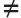
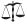

If a man smite his servant, or his maid, with a rod, and … if he continue a day or two, he shall not be punished: for he is his money. — Exodus 21:20-21
Exodus shows the quirkiness of God. Who else would:
Only the God of the Bible does such things. And if you can still believe in him after reading Exodus, then your heart has been sufficiently hardened by him.
Here are some highlights:
1 Now these are the names of the children of Israel, which came into Egypt; every man and his household came with Jacob.
2 Reuben, Simeon, Levi, and Judah,
3 Issachar, Zebulun, and Benjamin,
4 Dan, and Naphtali, Gad, and Asher.
(1.5-7) Population explosion!
The Israelite population went from 70 (or 75) to more than a million (Ex 12.37, 38.26, Num 1.45-46) in about four hundred years.
5 And all the souls that came out of the loins of Jacob were seventy souls: for Joseph was in Egypt already.
(1.5) “All the souls that came out of the loins of Jacob were seventy souls.”
83 How many were in Jacob’s family when they came into Egypt?
6 And Joseph died, and all his brethren, and all that generation.
7 And the children of Israel were fruitful, and increased abundantly, and multiplied, and waxed exceeding mighty; and the land was filled with them.
(1.7) “The children of Israel were fruitful, and increased abundantly, and multiplied, and waxed exceeding mighty; and the land was filled with them.”
8 Now there arose up a new king over Egypt, which knew not Joseph.
9 And he said unto his people, Behold, the people of the children of Israel are more and mightier than we:
10 Come on, let us deal wisely with them; lest they multiply, and it come to pass, that, when there falleth out any war, they join also unto our enemies, and fight against us, and so get them up out of the land.
11 Therefore they did set over them taskmasters to afflict them with their burdens. And they built for Pharaoh treasure cities, Pithom and Raamses.
12 But the more they afflicted them, the more they multiplied and grew. And they were grieved because of the children of Israel.
13 And the Egyptians made the children of Israel to serve with rigour:
14 And they made their lives bitter with hard bondage, in morter, and in brick, and in all manner of service in the field: all their service, wherein they made them serve, was with rigour.
15 And the king of Egypt spake to the Hebrew midwives, of which the name of the one was Shiphrah, and the name of the other Puah:
16 And he said, When ye do the office of a midwife to the Hebrew women, and see them upon the stools; if it be a son, then ye shall kill him: but if it be a daughter, then she shall live.
17 But the midwives feared God, and did not as the king of Egypt commanded them, but saved the men children alive.
(1.18-20) God rewarded the Hebrew midwives for lying to the Pharaoh.
86 Is it OK to lie?
18 And the king of Egypt called for the midwives, and said unto them, Why have ye done this thing, and have saved the men children alive?
(1.18) “The king of Egypt called for the midwives, and said unto them, Why have ye done this thing, and have saved the men children alive?”
19 And the midwives said unto Pharaoh, Because the Hebrew women are not as the Egyptian women; for they are lively, and are delivered ere the midwives come in unto them.
(1.19) “And the midwives said unto Pharaoh, Because the Hebrew women are not as the Egyptian women; for they are lively, and are delivered ere the midwives come in unto them.”
20 Therefore God dealt well with the midwives: and the people multiplied, and waxed very mighty.
(1.20) “Therefore God dealt well with the midwives.”
21 And it came to pass, because the midwives feared God, that he made them houses.
22 And Pharaoh charged all his people, saying, Every son that is born ye shall cast into the river, and every daughter ye shall save alive.
2 And there went a man of the house of Levi, and took to wife a daughter of Levi.
2 And the woman conceived, and bare a son: and when she saw him that he was a goodly child, she hid him three months.
3 And when she could not longer hide him, she took for him an ark of bulrushes, and daubed it with slime and with pitch, and put the child therein; and she laid it in the flags by the river’s brink.
(2.3) “She took for him an ark of bulrushes.” The birth story of Moses is suspiciously similar to that of the birth of Sargon, an Akkadian monarch from the 3rd millennium BCE.
4 And his sister stood afar off, to wit what would be done to him.
5 And the daughter of Pharaoh came down to wash herself at the river; and her maidens walked along by the river’s side; and when she saw the ark among the flags, she sent her maid to fetch it.
6 And when she had opened it, she saw the child: and, behold, the babe wept. And she had compassion on him, and said, This is one of the Hebrews’ children.
7 Then said his sister to Pharaoh’s daughter, Shall I go and call to thee a nurse of the Hebrew women, that she may nurse the child for thee?
8 And Pharaoh’s daughter said to her, Go. And the maid went and called the child’s mother.
9 And Pharaoh’s daughter said unto her, Take this child away, and nurse it for me, and I will give thee thy wages. And the woman took the child, and nursed it.
10 And the child grew, and she brought him unto Pharaoh’s daughter, and he became her son. And she called his name Moses: and she said, Because I drew him out of the water.
 (2.11-12) Moses murders an Egyptian after making sure that no one is looking.
11 And it came to pass in those days, when Moses was grown, that he went out unto his brethren, and looked on their burdens: and he spied an Egyptian smiting an Hebrew, one of his brethren.
(2.11) “Moses … spied an Egyptian smiting an Hebrew.”
12 And he looked this way and that way, and when he saw that there was no man, he slew the Egyptian, and hid him in the sand.
(2.12) “And he looked this way and that way, and when he saw that there was no man, he slew the Egyptian, and hid him in the sand.”
13 And when he went out the second day, behold, two men of the Hebrews strove together: and he said to him that did the wrong, Wherefore smitest thou thy fellow?
14 And he said, Who made thee a prince and a judge over us? intendest thou to kill me, as thou killedst the Egyptian? And Moses feared, and said, Surely this thing is known.
15 Now when Pharaoh heard this thing, he sought to slay Moses. But Moses fled from the face of Pharaoh, and dwelt in the land of Midian: and he sat down by a well.
(2.14-15) “Moses feared, and … fled from the face of Pharaoh.”
87 Did Moses fear the Pharaoh?
16 Now the priest of Midian had seven daughters: and they came and drew water, and filled the troughs to water their father’s flock.
17 And the shepherds came and drove them away: but Moses stood up and helped them, and watered their flock.
18 And when they came to Reuel their father, he said, How is it that ye are come so soon to day?
(2.18) “Reuel their father”
88 Who was Moses’ father-in-law?
19 And they said, An Egyptian delivered us out of the hand of the shepherds, and also drew water enough for us, and watered the flock.
20 And he said unto his daughters, And where is he? why is it that ye have left the man? call him, that he may eat bread.
21 And Moses was content to dwell with the man: and he gave Moses Zipporah his daughter.
22 And she bare him a son, and he called his name Gershom: for he said, I have been a stranger in a strange land.
23 And it came to pass in process of time, that the king of Egypt died: and the children of Israel sighed by reason of the bondage, and they cried, and their cry came up unto God by reason of the bondage.
24 And God heard their groaning, and God remembered his covenant with Abraham, with Isaac, and with Jacob.
25 And God looked upon the children of Israel, and God had respect unto them.
(2.25) “God had respect unto them.”
21 Does God respect anyone?
3 Now Moses kept the flock of Jethro his father in law, the priest of Midian: and he led the flock to the backside of the desert, and came to the mountain of God, even to Horeb.
(3.1) “Jethro his father in law”
88 Who was Moses’ father-in-law?
(3.2-4) God, disguised as a burning bush, has a long heart-to-heart talk with Moses.
89 Who appeared to Moses in the burning bush?
2 And the angel of the LORD appeared unto him in a flame of fire out of the midst of a bush: and he looked, and, behold, the bush burned with fire, and the bush was not consumed.
(3.2) “The angel of the LORD appeared unto him in a flame of fire out of the midst of a bush.”
3 And Moses said, I will now turn aside, and see this great sight, why the bush is not burnt.
4 And when the LORD saw that he turned aside to see, God called unto him out of the midst of the bush, and said, Moses, Moses. And he said, Here am I.
(3.4) “God called unto him out of the midst of the bush.”
5 And he said, Draw not nigh hither: put off thy shoes from off thy feet, for the place whereon thou standest is holy ground.
6 Moreover he said, I am the God of thy father, the God of Abraham, the God of Isaac, and the God of Jacob. And Moses hid his face; for he was afraid to look upon God.
7 And the LORD said, I have surely seen the affliction of my people which are in Egypt, and have heard their cry by reason of their taskmasters; for I know their sorrows;
8 And I am come down to deliver them out of the hand of the Egyptians, and to bring them up out of that land unto a good land and a large, unto a land flowing with milk and honey; unto the place of the Canaanites, and the Hittites, and the Amorites, and the Perizzites, and the Hivites, and the Jebusites.
9 Now therefore, behold, the cry of the children of Israel is come unto me: and I have also seen the oppression wherewith the Egyptians oppress them.
10 Come now therefore, and I will send thee unto Pharaoh, that thou mayest bring forth my people the children of Israel out of Egypt.
11 And Moses said unto God, Who am I, that I should go unto Pharaoh, and that I should bring forth the children of Israel out of Egypt?
12 And he said, Certainly I will be with thee; and this shall be a token unto thee, that I have sent thee: When thou hast brought forth the people out of Egypt, ye shall serve God upon this mountain.
13 And Moses said unto God, Behold, when I come unto the children of Israel, and shall say unto them, The God of your fathers hath sent me unto you; and they shall say to me, What is his name? what shall I say unto them?
14 And God said unto Moses, I AM THAT I AM: and he said, Thus shalt thou say unto the children of Israel, I AM hath sent me unto you.
(3.14) “Thus shalt thou say unto the children of Israel, I AM hath sent me unto you.”
90 What is God’s name?
15 And God said moreover unto Moses, Thus shalt thou say unto the children of Israel, The LORD God of your fathers, the God of Abraham, the God of Isaac, and the God of Jacob, hath sent me unto you: this is my name for ever, and this is my memorial unto all generations.
16 Go, and gather the elders of Israel together, and say unto them, The LORD God of your fathers, the God of Abraham, of Isaac, and of Jacob, appeared unto me, saying, I have surely visited you, and seen that which is done to you in Egypt:
(3.16) “The Lord … appeared to me.”
49 Has anyone ever seen God?
17 And I have said, I will bring you up out of the affliction of Egypt unto the land of the Canaanites, and the Hittites, and the Amorites, and the Perizzites, and the Hivites, and the Jebusites, unto a land flowing with milk and honey.
18 And they shall hearken to thy voice: and thou shalt come, thou and the elders of Israel, unto the king of Egypt, and ye shall say unto him, The LORD God of the Hebrews hath met with us: and now let us go, we beseech thee, three days’ journey into the wilderness, that we may sacrifice to the LORD our God.
19 And I am sure that the king of Egypt will not let you go, no, not by a mighty hand.
20 And I will stretch out my hand, and smite Egypt with all my wonders which I will do in the midst thereof: and after that he will let you go.
(3.20) “I will … smite Egypt with all my wonders.”
21 And I will give this people favour in the sight of the Egyptians: and it shall come to pass, that, when ye go, ye shall not go empty:
22 But every woman shall borrow of her neighbour, and of her that sojourneth in her house, jewels of silver, and jewels of gold, and raiment: and ye shall put them upon your sons, and upon your daughters; and ye shall spoil the Egyptians.
(3.22) “Ye shall spoil the Egyptians.”
God tells the Hebrew women to break the eighth commandment. (Or the seventh if you’re Catholic.)
91 Is it wrong to steal?
4 And Moses answered and said, But, behold, they will not believe me, nor hearken unto my voice: for they will say, The LORD hath not appeared unto thee.
(4.2-9) God shows Moses some magic tricks
First, throw your rod on the ground; it will become a snake. Then grab the snake by the tail and it will become a rod again. Next, make your hand appear leprous, and then cure it. And finally, pour water on the ground and it will turn into blood. (That ought to do it!)
92 Is magic OK?
2 And the LORD said unto him, What is that in thine hand? And he said, A rod.
(4.2) “The LORD said unto him, What is that in thine hand? And he said, A rod.”
3 And he said, Cast it on the ground. And he cast it on the ground, and it became a serpent; and Moses fled from before it.
(4.3) “Cast it on the ground. And he cast it on the ground, and it became a serpent; and Moses fled from before it.”
4 And the LORD said unto Moses, Put forth thine hand, and take it by the tail. And he put forth his hand, and caught it, and it became a rod in his hand:
(4.4) “Put forth thine hand, and take it by the tail. And he put forth his hand, and caught it, and it became a rod in his hand.”
5 That they may believe that the LORD God of their fathers, the God of Abraham, the God of Isaac, and the God of Jacob, hath appeared unto thee.
(4.5) “The Lord God … hath appeared unto thee.”
49 Can God be seen?
6 And the LORD said furthermore unto him, Put now thine hand into thy bosom. And he put his hand into his bosom: and when he took it out, behold, his hand was leprous as snow.
(4.6) “Put now thine hand into thy bosom. And he put his hand into his bosom: and when he took it out, behold, his hand was leprous as snow.”
7 And he said, Put thine hand into thy bosom again. And he put his hand into his bosom again; and plucked it out of his bosom, and, behold, it was turned again as his other flesh.
(4.7) “Put thine hand into thy bosom again. And he put his hand into his bosom again; and plucked it out of his bosom, and, behold, it was turned again as his other flesh.”
8 And it shall come to pass, if they will not believe thee, neither hearken to the voice of the first sign, that they will believe the voice of the latter sign.
(4.8) “If they will not believe … the first sign, … they will believe … the latter sign.”
9 And it shall come to pass, if they will not believe also these two signs, neither hearken unto thy voice, that thou shalt take of the water of the river, and pour it upon the dry land: and the water which thou takest out of the river shall become blood upon the dry land.
(4.9) “If they will not believe … these two signs, … take of the water of the river, and pour it upon the dry land: and the water which thou takest out of the river shall become blood.”
10 And Moses said unto the LORD, O my Lord, I am not eloquent, neither heretofore, nor since thou hast spoken unto thy servant: but I am slow of speech, and of a slow tongue.
(4.10) “I am not eloquent … but I am slow of speech, and of a slow tongue.”
93 Was Moses a good speaker?
11 And the LORD said unto him, Who hath made man’s mouth? or who maketh the dumb, or deaf, or the seeing, or the blind? have not I the LORD?
(4.11) “Who maketh the dumb, or deaf, or the seeing, or the blind? have not I the LORD?” Why are some people born with disabilities? Because God deliberately makes them that way.
94 Who makes people deaf and blind?
12 Now therefore go, and I will be with thy mouth, and teach thee what thou shalt say.
13 And he said, O my Lord, send, I pray thee, by the hand of him whom thou wilt send.
14 And the anger of the LORD was kindled against Moses, and he said, Is not Aaron the Levite thy brother? I know that he can speak well. And also, behold, he cometh forth to meet thee: and when he seeth thee, he will be glad in his heart.
15 And thou shalt speak unto him, and put words in his mouth: and I will be with thy mouth, and with his mouth, and will teach you what ye shall do.
16 And he shall be thy spokesman unto the people: and he shall be, even he shall be to thee instead of a mouth, and thou shalt be to him instead of God.
(4.14-16) “Is not Aaron … thy brother? I know that he can speak well … He shall be thy spokesman.”
93 Was Moses a good speaker?
17 And thou shalt take this rod in thine hand, wherewith thou shalt do signs.
18 And Moses went and returned to Jethro his father in law, and said unto him, Let me go, I pray thee, and return unto my brethren which are in Egypt, and see whether they be yet alive. And Jethro said to Moses, Go in peace.
(4.18) “Jethro his father in law”
88 Who was Moses’ father-in-law?
19 And the LORD said unto Moses in Midian, Go, return into Egypt: for all the men are dead which sought thy life.
20 And Moses took his wife and his sons, and set them upon an ass, and he returned to the land of Egypt: and Moses took the rod of God in his hand.
21 And the LORD said unto Moses, When thou goest to return into Egypt, see that thou do all those wonders before Pharaoh, which I have put in thine hand: but I will harden his heart, that he shall not let the people go.
(4.21) “I will harden his heart, that he shall not let the people go.” God hardens Pharaoh’s heart the first time.
95 Who hardened the Pharaoh’s heart?
22 And thou shalt say unto Pharaoh, Thus saith the LORD, Israel is my son, even my firstborn:
23 And I say unto thee, Let my son go, that he may serve me: and if thou refuse to let him go, behold, I will slay thy son, even thy firstborn.
(4.23) “If thou refuse to let him go, behold, I will slay thy son, even thy firstborn.” God threatens to kill Pharaoh’s firstborn son.
24 And it came to pass by the way in the inn, that the LORD met him, and sought to kill him.
(4.24) “The LORD met him, and sought to kill him.”
25 Then Zipporah took a sharp stone, and cut off the foreskin of her son, and cast it at his feet, and said, Surely a bloody husband art thou to me.
(4.25) “Then Zipporah took a sharp stone, and cut off the foreskin of her son, and cast it at his feet, and said, Surely a bloody husband art thou to me.”
26 So he let him go: then she said, A bloody husband thou art, because of the circumcision.
27 And the LORD said to Aaron, Go into the wilderness to meet Moses. And he went, and met him in the mount of God, and kissed him.
28 And Moses told Aaron all the words of the LORD who had sent him, and all the signs which he had commanded him.
29 And Moses and Aaron went and gathered together all the elders of the children of Israel:
30 And Aaron spake all the words which the LORD had spoken unto Moses, and did the signs in the sight of the people.
31 And the people believed: and when they heard that the LORD had visited the children of Israel, and that he had looked upon their affliction, then they bowed their heads and worshipped.
5 And afterward Moses and Aaron went in, and told Pharaoh, Thus saith the LORD God of Israel, Let my people go, that they may hold a feast unto me in the wilderness.
2 And Pharaoh said, Who is the LORD, that I should obey his voice to let Israel go? I know not the LORD, neither will I let Israel go.
3 And they said, The God of the Hebrews hath met with us: let us go, we pray thee, three days’ journey into the desert, and sacrifice unto the LORD our God; lest he fall upon us with pestilence, or with the sword.
(5.3) “Let us go … three days’ journey into the desert sacrifice unto the LORD our God; lest he fall upon us with pestilence, or with the sword.” Moses and Aaron ask the Pharaoh to let all the Israelites go into the desert to pray for three days, or else God will kill them all “with pestilence, or with the sword.”
4 And the king of Egypt said unto them, Wherefore do ye, Moses and Aaron, let the people from their works? get you unto your burdens.
5 And Pharaoh said, Behold, the people of the land now are many, and ye make them rest from their burdens.
6 And Pharaoh commanded the same day the taskmasters of the people, and their officers, saying,
7 Ye shall no more give the people straw to make brick, as heretofore: let them go and gather straw for themselves.
8 And the tale of the bricks, which they did make heretofore, ye shall lay upon them; ye shall not diminish ought thereof: for they be idle; therefore they cry, saying, Let us go and sacrifice to our God.
9 Let there more work be laid upon the men, that they may labour therein; and let them not regard vain words.
10 And the taskmasters of the people went out, and their officers, and they spake to the people, saying, Thus saith Pharaoh, I will not give you straw.
11 Go ye, get you straw where ye can find it: yet not ought of your work shall be diminished.
12 So the people were scattered abroad throughout all the land of Egypt to gather stubble instead of straw.
13 And the taskmasters hasted them, saying, Fulfil your works, your daily tasks, as when there was straw.
14 And the officers of the children of Israel, which Pharaoh’s taskmasters had set over them, were beaten, and demanded, Wherefore have ye not fulfilled your task in making brick both yesterday and to day, as heretofore?
15 Then the officers of the children of Israel came and cried unto Pharaoh, saying, Wherefore dealest thou thus with thy servants?
16 There is no straw given unto thy servants, and they say to us, Make brick: and, behold, thy servants are beaten; but the fault is in thine own people.
17 But he said, Ye are idle, ye are idle: therefore ye say, Let us go and do sacrifice to the LORD.
18 Go therefore now, and work; for there shall no straw be given you, yet shall ye deliver the tale of bricks.
19 And the officers of the children of Israel did see that they were in evil case, after it was said, Ye shall not minish ought from your bricks of your daily task.
20 And they met Moses and Aaron, who stood in the way, as they came forth from Pharaoh:
21 And they said unto them, The LORD look upon you, and judge; because ye have made our savour to be abhorred in the eyes of Pharaoh, and in the eyes of his servants, to put a sword in their hand to slay us.
22 And Moses returned unto the LORD, and said, Lord, wherefore hast thou so evil entreated this people? why is it that thou hast sent me?
23 For since I came to Pharaoh to speak in thy name, he hath done evil to this people; neither hast thou delivered thy people at all.
6 Then the LORD said unto Moses, Now shalt thou see what I will do to Pharaoh: for with a strong hand shall he let them go, and with a strong hand shall he drive them out of his land.
(6.1) “Now shalt thou see what I will do to Pharaoh.”
2 And God spake unto Moses, and said unto him, I am the LORD:
3 And I appeared unto Abraham, unto Isaac, and unto Jacob, by the name of God Almighty, but by my name JEHOVAH was I not known to them.
(6.3) “I appeared unto Abraham, unto Isaac, and unto Jacob, by the name of God Almighty, but by my name JEHOVAH was I not known to them.”
49 Has anyone ever seen God?
90 What is God’s name?
67 Did Abraham know God’s name?
4 And I have also established my covenant with them, to give them the land of Canaan, the land of their pilgrimage, wherein they were strangers.
5 And I have also heard the groaning of the children of Israel, whom the Egyptians keep in bondage; and I have remembered my covenant.
6 Wherefore say unto the children of Israel, I am the LORD, and I will bring you out from under the burdens of the Egyptians, and I will rid you out of their bondage, and I will redeem you with a stretched out arm, and with great judgments:
7 And I will take you to me for a people, and I will be to you a God: and ye shall know that I am the LORD your God, which bringeth you out from under the burdens of the Egyptians.
8 And I will bring you in unto the land, concerning the which I did swear to give it to Abraham, to Isaac, and to Jacob; and I will give it you for an heritage: I am the LORD.
9 And Moses spake so unto the children of Israel: but they hearkened not unto Moses for anguish of spirit, and for cruel bondage.
10 And the LORD spake unto Moses, saying,
11 Go in, speak unto Pharaoh king of Egypt, that he let the children of Israel go out of his land.
(6.12, 30) Complaining about his difficulty with public speaking, Moses says, “Behold I am of uncircumcised lips.”
93 Was Moses a good speaker?
12 And Moses spake before the LORD, saying, Behold, the children of Israel have not hearkened unto me; how then shall Pharaoh hear me, who am of uncircumcised lips?
(6.12) “Behold, [I] am of uncircumcised lips.”
13 And the LORD spake unto Moses and unto Aaron, and gave them a charge unto the children of Israel, and unto Pharaoh king of Egypt, to bring the children of Israel out of the land of Egypt.
14 These be the heads of their fathers’ houses: The sons of Reuben the firstborn of Israel; Hanoch, and Pallu, Hezron, and Carmi: these be the families of Reuben.
15 And the sons of Simeon; Jemuel, and Jamin, and Ohad, and Jachin, and Zohar, and Shaul the son of a Canaanitish woman: these are the families of Simeon.
(6.16-20) Levi, Kohath (v.18), and Amram (v.20) join the long list of biblical characters with ridiculously long lives (137, 133, and 137 years, respectively).
16 And these are the names of the sons of Levi according to their generations; Gershon, and Kohath, and Merari: and the years of the life of Levi were an hundred thirty and seven years.
(6.16) “The years of the life of Levi were an hundred thirty and seven years.”
17 The sons of Gershon; Libni, and Shimi, according to their families.
18 And the sons of Kohath; Amram, and Izhar, and Hebron, and Uzziel: and the years of the life of Kohath were an hundred thirty and three years.
(6.18) “The years of the life of Kohath were an hundred thirty and three years.”
19 And the sons of Merari; Mahali and Mushi: these are the families of Levi according to their generations.
20 And Amram took him Jochebed his father’s sister to wife; and she bare him Aaron and Moses: and the years of the life of Amram were an hundred and thirty and seven years.
(6.20a) “Amram took … his father’s sister to wife; and she bare him Aaron and Moses.” Moses and Aaron were the products of an incestuous marriage.
55 Is incest forbidden?
(6.20b) “The years of the life of Amram were an hundred and thirty and seven years.”
21 And the sons of Izhar; Korah, and Nepheg, and Zichri.
22 And the sons of Uzziel; Mishael, and Elzaphan, and Zithri.
23 And Aaron took him Elisheba, daughter of Amminadab, sister of Naashon, to wife; and she bare him Nadab, and Abihu, Eleazar, and Ithamar.
24 And the sons of Korah; Assir, and Elkanah, and Abiasaph: these are the families of the Korhites.
25 And Eleazar Aaron’s son took him one of the daughters of Putiel to wife; and she bare him Phinehas: these are the heads of the fathers of the Levites according to their families.
26 These are that Aaron and Moses, to whom the LORD said, Bring out the children of Israel from the land of Egypt according to their armies.
27 These are they which spake to Pharaoh king of Egypt, to bring out the children of Israel from Egypt: these are that Moses and Aaron.
28 And it came to pass on the day when the LORD spake unto Moses in the land of Egypt,
29 That the LORD spake unto Moses, saying, I am the LORD: speak thou unto Pharaoh king of Egypt all that I say unto thee.
30 And Moses said before the LORD, Behold, I am of uncircumcised lips, and how shall Pharaoh hearken unto me?
(6.30) “Behold, I am of uncircumcised lips.”
7 And the LORD said unto Moses, See, I have made thee a god to Pharaoh: and Aaron thy brother shall be thy prophet.
2 Thou shalt speak all that I command thee: and Aaron thy brother shall speak unto Pharaoh, that he send the children of Israel out of his land.
3 And I will harden Pharaoh’s heart, and multiply my signs and my wonders in the land of Egypt.
(7.3) “I will harden Pharaoh’s heart.” God hardens Pharaoh’s heart for the second time.
95 Who hardened the Pharaoh’s heart?
(7.4-5) God will make sure that Pharaoh does not listen to Moses, so that he can kill Egyptians with his armies.
4 But Pharaoh shall not hearken unto you, that I may lay my hand upon Egypt, and bring forth mine armies, and my people the children of Israel, out of the land of Egypt by great judgments.
(7.4) “Pharaoh shall not hearken unto you, that I may lay my hand upon Egypt.”
5 And the Egyptians shall know that I am the LORD, when I stretch forth mine hand upon Egypt, and bring out the children of Israel from among them.
(7.5) “And the Egyptians shall know that I am the LORD.” (Who else could be so cruel and unjust?)
6 And Moses and Aaron did as the LORD commanded them, so did they.
7 And Moses was fourscore years old, and Aaron fourscore and three years old, when they spake unto Pharaoh.
8 And the LORD spake unto Moses and unto Aaron, saying,
(7.9-12) God tells Moses and Aaron that when Pharaoh asks for a miracle just throw your rod down and it will become a serpent. So when the time comes, Aaron throws down his rod and it becomes a serpent. But the Egyptian magicians duplicate this trick, too. Luckily, for Aaron, his snake swallows theirs. (Whew!)
9 When Pharaoh shall speak unto you, saying, Shew a miracle for you: then thou shalt say unto Aaron, Take thy rod, and cast it before Pharaoh, and it shall become a serpent.
(7.9) “When Pharaoh shall speak unto you, saying, Shew a miracle for you: then thou shalt say unto Aaron, Take thy rod, and cast it before Pharaoh, and it shall become a serpent.”
10 And Moses and Aaron went in unto Pharaoh, and they did so as the LORD had commanded: and Aaron cast down his rod before Pharaoh, and before his servants, and it became a serpent.
(7.10) “Aaron cast down his rod before Pharaoh, and before his servants, and it became a serpent.”
11 Then Pharaoh also called the wise men and the sorcerers: now the magicians of Egypt, they also did in like manner with their enchantments.
12 For they cast down every man his rod, and they became serpents: but Aaron’s rod swallowed up their rods.
(7.11-12a) “Now the magicians of Egypt, they also did in like manner with their enchantments. For they cast down every man his rod, and they became serpents;”
The magicians know the rod to serpent trick too! Score: Aaron 1, Magicians 1
(7.12b) “But Aaron’s rod swallowed up their rods.” But Aaron’s rod-snake swallowed theirs, so Aaron gets another point.
Score: Aaron 2, Magicians 1
(7.13-14) God hardens Pharaoh’s heart the 3rd time.
13 And he hardened Pharaoh’s heart, that he hearkened not unto them; as the LORD had said.
(7.13) “And he hardened Pharaoh’s heart, that he hearkened not unto them.”
95 Who hardened the Pharaoh’s heart?
14 And the LORD said unto Moses, Pharaoh’s heart is hardened, he refuseth to let the people go.
(7.14) “And the LORD said unto Moses, Pharaoh’s heart is hardened, he refuseth to let the people go.” (Well, yeah! His heart was hardened by you.)
The First Plague
(7.15-24) The river is turned into blood
After the rod to serpent trick, God tells Moses and Aaron to smite the river and turn it into blood. This is the first of the famous 10 plagues of Egypt. Unfortunately, the magicians know this trick too, and they do so with their enchantments. Shucks! Just how the river could be turned to blood by the Egyptian sorcerers after it had been turned to blood by Moses and Aaron is not explained.
15 Get thee unto Pharaoh in the morning; lo, he goeth out unto the water; and thou shalt stand by the river’s brink against he come; and the rod which was turned to a serpent shalt thou take in thine hand.
(7.15) “Get thee unto Pharaoh … thou shalt stand by the river’s brink … and the rod which was turned to a serpent shalt thou take in thine hand.”
16 And thou shalt say unto him, The LORD God of the Hebrews hath sent me unto thee, saying, Let my people go, that they may serve me in the wilderness: and, behold, hitherto thou wouldest not hear.
17 Thus saith the LORD, In this thou shalt know that I am the LORD: behold, I will smite with the rod that is in mine hand upon the waters which are in the river, and they shall be turned to blood.
(7.17) “In this thou shalt know that I am the LORD: behold, I will smite with the rod that is in mine hand upon the waters which are in the river, and they shall be turned to blood.” (You’ll know that God is the Lord when he turns a river into blood.)
18 And the fish that is in the river shall die, and the river shall stink; and the Egyptians shall lothe to drink of the water of the river.
(7.18) “And the fish that is in the river shall die, and the river shall stink; and the Egyptians shall lothe to drink of the water of the river.”
19 And the LORD spake unto Moses, Say unto Aaron, Take thy rod, and stretch out thine hand upon the waters of Egypt, upon their streams, upon their rivers, and upon their ponds, and upon all their pools of water, that they may become blood; and that there may be blood throughout all the land of Egypt, both in vessels of wood, and in vessels of stone.
20 And Moses and Aaron did so, as the LORD commanded; and he lifted up the rod, and smote the waters that were in the river, in the sight of Pharaoh, and in the sight of his servants; and all the waters that were in the river were turned to blood.
(7.19-20) “Take thy rod, and stretch out thine hand upon the waters of Egypt … that they may become blood … And Moses and Aaron did so, as the LORD commanded.”
21 And the fish that was in the river died; and the river stank, and the Egyptians could not drink of the water of the river; and there was blood throughout all the land of Egypt.
(7.21) “And the fish that was in the river died; and the river stank, and the Egyptians could not drink of the water of the river; and there was blood throughout all the land of Egypt.”
22 And the magicians of Egypt did so with their enchantments: and Pharaoh’s heart was hardened, neither did he hearken unto them; as the LORD had said.
23 And Pharaoh turned and went into his house, neither did he set his heart to this also.
(7.22) “And the magicians of Egypt did so with their enchantments.” The magicians know the rivers to blood trick too! Score. Aaron 3, Magicians 2
24 And all the Egyptians digged round about the river for water to drink; for they could not drink of the water of the river.
(7.24) “The Egyptians … could not drink of the water of the river.” The Egyptians can’t drink from river whose water God (and the magicians) turned to blood.
25 And seven days were fulfilled, after that the LORD had smitten the river.
The Second Plague
(8.1-14) Frogs!
Frogs covered the land. They were all over the beds and filled the ovens. But the Egyptian magicians did this trick too. (Did they wait until the frogs cleared out from the last performance before doing it again?) After the frog making contest was declared a draw, all the frogs died and “they gathered them together upon heaps; and the land stank.” I bet. But at least it was all for the greater glory of God.
8 And the LORD spake unto Moses, Go unto Pharaoh, and say unto him, Thus saith the LORD, Let my people go, that they may serve me.
2 And if thou refuse to let them go, behold, I will smite all thy borders with frogs:
(8.1-2) “And the LORD spake unto Moses, Go unto Pharaoh, and say unto him … if thou refuse to let them go, behold, I will smite all thy borders with frogs.”
3 And the river shall bring forth frogs abundantly, which shall go up and come into thine house, and into thy bedchamber, and upon thy bed, and into the house of thy servants, and upon thy people, and into thine ovens, and into thy kneadingtroughs:
4 And the frogs shall come up both on thee, and upon thy people, and upon all thy servants.
5 And the LORD spake unto Moses, Say unto Aaron, Stretch forth thine hand with thy rod over the streams, over the rivers, and over the ponds, and cause frogs to come up upon the land of Egypt.
(8.5) “Say unto Aaron, Stretch forth thine hand with thy rod … and cause frogs to come up upon the land of Egypt.”
6 And Aaron stretched out his hand over the waters of Egypt; and the frogs came up, and covered the land of Egypt.
(8.6) “And Aaron stretched out his hand over the waters of Egypt; and the frogs came up, and covered the land of Egypt.”
7 And the magicians did so with their enchantments, and brought up frogs upon the land of Egypt.
(8.7) “And the magicians did so with their enchantments, and brought up frogs upon the land of Egypt.” The magicians know the frog trick too! Score: 4-3
8 Then Pharaoh called for Moses and Aaron, and said, Intreat the LORD, that he may take away the frogs from me, and from my people; and I will let the people go, that they may do sacrifice unto the LORD.
9 And Moses said unto Pharaoh, Glory over me: when shall I intreat for thee, and for thy servants, and for thy people, to destroy the frogs from thee and thy houses, that they may remain in the river only?
10 And he said, To morrow. And he said, Be it according to thy word: that thou mayest know that there is none like unto the LORD our God.
11 And the frogs shall depart from thee, and from thy houses, and from thy servants, and from thy people; they shall remain in the river only.
12 And Moses and Aaron went out from Pharaoh: and Moses cried unto the LORD because of the frogs which he had brought against Pharaoh.
13 And the LORD did according to the word of Moses; and the frogs died out of the houses, out of the villages, and out of the fields.
14 And they gathered them together upon heaps: and the land stank.
(8.14) “And they gathered them together upon heaps: and the land stank.”
15 But when Pharaoh saw that there was respite, he hardened his heart, and hearkened not unto them; as the LORD had said.
(8.15) “Pharaoh … hardened his heart.”
95 Who hardened the Pharaoh’s heart?
The Third Plague
(8.16-19) Lice!
This is the first trick that the magicians couldn’t do. After this the magicians were convinced that Moses and Aaron’s plagues were done by “the finger of God,” and they gave up trying to match the remaining seven plagues. I guess lice are harder to make than frogs.
16 And the LORD said unto Moses, Say unto Aaron, Stretch out thy rod, and smite the dust of the land, that it may become lice throughout all the land of Egypt.
(8.16) “The LORD said unto Moses, Say unto Aaron, Stretch out thy rod, and smite the dust of the land, that it may become lice throughout all the land of Egypt.”
17 And they did so; for Aaron stretched out his hand with his rod, and smote the dust of the earth, and it became lice in man, and in beast; all the dust of the land became lice throughout all the land of Egypt.
(8.17) “Aaron stretched out his hand with his rod, and smote the dust of the earth, and it became lice in man, and in beast.”
18 And the magicians did so with their enchantments to bring forth lice, but they could not: so there were lice upon man, and upon beast.
(8.18) “The magicians … could not.”
The magicians couldn’t do lice.
Final score: God 5, Magicians 3 and God wins!
19 Then the magicians said unto Pharaoh, This is the finger of God: and Pharaoh’s heart was hardened, and he hearkened not unto them; as the LORD had said.
(8.19) “Then the magicians said unto Pharaoh, This is [obviously] the finger of God.”
The Fourth Plague (8.20-21) Swarms of flies, continuing the frogs and lice theme
20 And the LORD said unto Moses, Rise up early in the morning, and stand before Pharaoh; lo, he cometh forth to the water; and say unto him, Thus saith the LORD, Let my people go, that they may serve me.
(8.20) “The LORD said unto Moses … stand before Pharaoh … and say unto him, Thus saith the LORD, Let my people go, that they may serve me.”
21 Else, if thou wilt not let my people go, behold, I will send swarms of flies upon thee, and upon thy servants, and upon thy people, and into thy houses: and the houses of the Egyptians shall be full of swarms of flies, and also the ground whereon they are.
(8.21) “Else … I will send swarms of flies upon thee, and upon thy servants, and upon thy people, and into thy houses: and the houses of the Egyptians shall be full of swarms of flies.”
(8.22-24) God sent flies on everyone in Egypt except for in Goshen, where the Israelites lived.
22 And I will sever in that day the land of Goshen, in which my people dwell, that no swarms of flies shall be there; to the end thou mayest know that I am the LORD in the midst of the earth.
(8.22) “The land of Goshen, in which my people dwell … no swarms of flies shall be there.”
23 And I will put a division between my people and thy people: to morrow shall this sign be.
(8.23) “I will put a division between my people and thy people.”
24 And the LORD did so; and there came a grievous swarm of flies into the house of Pharaoh, and into his servants’ houses, and into all the land of Egypt: the land was corrupted by reason of the swarm of flies.
(8.24) “And the LORD did so; and there came a grievous swarm of flies into the house of Pharaoh, and into his servants’ houses, and into all the land of Egypt: the land was corrupted by reason of the swarm of flies.”
25 And Pharaoh called for Moses and for Aaron, and said, Go ye, sacrifice to your God in the land.
26 And Moses said, It is not meet so to do; for we shall sacrifice the abomination of the Egyptians to the LORD our God: lo, shall we sacrifice the abomination of the Egyptians before their eyes, and will they not stone us?
27 We will go three days’ journey into the wilderness, and sacrifice to the LORD our God, as he shall command us.
(8.27) “We will … sacrifice to the LORD our God, as he shall command us.”
96 Did God command the Israelites to make burnt offerings?
28 And Pharaoh said, I will let you go, that ye may sacrifice to the LORD your God in the wilderness; only ye shall not go very far away: intreat for me.
29 And Moses said, Behold, I go out from thee, and I will intreat the LORD that the swarms of flies may depart from Pharaoh, from his servants, and from his people, to morrow: but let not Pharaoh deal deceitfully any more in not letting the people go to sacrifice to the LORD.
30 And Moses went out from Pharaoh, and intreated the LORD.
31 And the LORD did according to the word of Moses; and he removed the swarms of flies from Pharaoh, from his servants, and from his people; there remained not one.
32 And Pharaoh hardened his heart at this time also, neither would he let the people go.
(8.32) “Pharaoh hardened his heart.”
95 Who hardened the Pharaoh’s heart?
9 Then the LORD said unto Moses, Go in unto Pharaoh, and tell him, Thus saith the LORD God of the Hebrews, Let my people go, that they may serve me.
2 For if thou refuse to let them go, and wilt hold them still,
The Fifth Plague
(9.3-6) All cattle in Egypt die. But a little later, in the seventh and tenth plagues, God kills them all again. (See Exodus 9.19-20 and 12.29 for other divine cattle killings.)
97 Did God kill all the Egyptian cattle in the sixth plague?
3 Behold, the hand of the LORD is upon thy cattle which is in the field, upon the horses, upon the asses, upon the camels, upon the oxen, and upon the sheep: there shall be a very grievous murrain.
(9.3) “The hand of the LORD is upon thy cattle … upon the horses, upon the asses, upon the camels, upon the oxen, and upon the sheep: there shall be a very grievous murrain.”
4 And the LORD shall sever between the cattle of Israel and the cattle of Egypt: and there shall nothing die of all that is the children’s of Israel.
(9.4) “The LORD shall sever between the cattle of Israel and the cattle of Egypt: and there shall nothing die of all that is the children’s of Israel.” God spares Israelite cattle. (I didn’t know slaves owned cattle.)
5 And the LORD appointed a set time, saying, To morrow the LORD shall do this thing in the land.
6 And the LORD did that thing on the morrow, and all the cattle of Egypt died: but of the cattle of the children of Israel died not one.
(9.6) “All the cattle of Egypt died, but of the cattle of the children of Israel died not one.” God kills all non-Israelite cattle (the first time)
7 And Pharaoh sent, and, behold, there was not one of the cattle of the Israelites dead. And the heart of Pharaoh was hardened, and he did not let the people go.
The Sixth Plague
(9.8-11) Boils and blains upon man and beast.
8 And the LORD said unto Moses and unto Aaron, Take to you handfuls of ashes of the furnace, and let Moses sprinkle it toward the heaven in the sight of Pharaoh.
(9.8) “Take to you handfuls of ashes of the furnace, and let Moses sprinkle it toward the heaven in the sight of Pharaoh.”
9 And it shall become small dust in all the land of Egypt, and shall be a boil breaking forth with blains upon man, and upon beast, throughout all the land of Egypt.
(9.9) “And it shall become small dust in all the land of Egypt, and shall be a boil breaking forth with blains upon man, and upon beast, throughout all the land of Egypt.”
10 And they took ashes of the furnace, and stood before Pharaoh; and Moses sprinkled it up toward heaven; and it became a boil breaking forth with blains upon man, and upon beast.
11 And the magicians could not stand before Moses because of the boils; for the boil was upon the magicians, and upon all the Egyptians.
(9.11) “The magicians could not stand before Moses because of the boils; for the boil was upon the magicians, and upon all the Egyptians.”
12 And the LORD hardened the heart of Pharaoh, and he hearkened not unto them; as the LORD had spoken unto Moses.
(9.12) “And the LORD hardened the heart of Pharaoh.” God hardens Pharaoh’s heart the 4th time.
95 Who hardened the Pharaoh’s heart?
13 And the LORD said unto Moses, Rise up early in the morning, and stand before Pharaoh, and say unto him, Thus saith the LORD God of the Hebrews, Let my people go, that they may serve me.
14 For I will at this time send all my plagues upon thine heart, and upon thy servants, and upon thy people; that thou mayest know that there is none like me in all the earth.
(9.14) “For I will … send all my plagues … that thou mayest know that there is none like me in all the earth.” (Who else but the god of the Bible could be so cruel?) God sends plagues so that people can get to know him better.
(9.15-16) God gave power to the Pharaoh so that he could show off his own power by tormenting and killing things.
15 For now I will stretch out my hand, that I may smite thee and thy people with pestilence; and thou shalt be cut off from the earth.
(9.15) “I will stretch out my hand, that I may smite thee and thy people with pestilence; and thou shalt be cut off from the earth.”
16 And in very deed for this cause have I raised thee up, for to shew in thee my power; and that my name may be declared throughout all the earth.
(9.16) “For this cause have I raised thee up, for to shew in thee my power.”
17 As yet exaltest thou thyself against my people, that thou wilt not let them go?
The Seventh Plague (9.18-26) Hail.
18 Behold, to morrow about this time I will cause it to rain a very grievous hail, such as hath not been in Egypt since the foundation thereof even until now.
(9.18) “Tomorrow about this time I will cause it to rain a very grievous hail.”
19 Send therefore now, and gather thy cattle, and all that thou hast in the field; for upon every man and beast which shall be found in the field, and shall not be brought home, the hail shall come down upon them, and they shall die.
(9.19) “Gather thy cattle … for upon every man and beast which shall be found in the field, and shall not be brought home, the hail shall come down upon them, and they shall die.”
God kills all cattle (the second time)
(See Exodus 9.6 and 12.29 for God’s other cattle killings.)
97 Did God kill all the Egyptian cattle in the sixth plague?
20 He that feared the word of the LORD among the servants of Pharaoh made his servants and his cattle flee into the houses:
21 And he that regarded not the word of the LORD left his servants and his cattle in the field.
22 And the LORD said unto Moses, Stretch forth thine hand toward heaven, that there may be hail in all the land of Egypt, upon man, and upon beast, and upon every herb of the field, throughout the land of Egypt.
(9.22) “The LORD said unto Moses, Stretch forth thine hand toward heaven, that there may be hail in all the land of Egypt.”
23 And Moses stretched forth his rod toward heaven: and the LORD sent thunder and hail, and the fire ran along upon the ground; and the LORD rained hail upon the land of Egypt.
(9.23) “The LORD sent thunder and hail, and the fire ran along upon the ground; and the LORD rained hail upon the land of Egypt.”
24 So there was hail, and fire mingled with the hail, very grievous, such as there was none like it in all the land of Egypt since it became a nation.
(9.24) “There was hail, and fire mingled with the hail, very grievous.”
God killed Egyptians and their livestock by smashing them with huge hailstones mixed with fire.
God’s 8th Killing
25 And the hail smote throughout all the land of Egypt all that was in the field, both man and beast; and the hail smote every herb of the field, and brake every tree of the field.
(9.25) “The hail smote throughout all the land of Egypt all that was in the field, both man and beast.”
26 Only in the land of Goshen, where the children of Israel were, was there no hail.
(9.26) “Only in the land of Goshen, where the children of Israel were, was there no hail.”
27 And Pharaoh sent, and called for Moses and Aaron, and said unto them, I have sinned this time: the LORD is righteous, and I and my people are wicked.
28 Intreat the LORD (for it is enough) that there be no more mighty thunderings and hail; and I will let you go, and ye shall stay no longer.
29 And Moses said unto him, As soon as I am gone out of the city, I will spread abroad my hands unto the LORD; and the thunder shall cease, neither shall there be any more hail; that thou mayest know how that the earth is the LORD’S.
(9.29) “The earth is the LORD’S.”
51 Who owns the earth?
30 But as for thee and thy servants, I know that ye will not yet fear the LORD God.
31 And the flax and the barley was smitten: for the barley was in the ear, and the flax was bolled.
32 But the wheat and the rie were not smitten: for they were not grown up.
33 And Moses went out of the city from Pharaoh, and spread abroad his hands unto the LORD: and the thunders and hail ceased, and the rain was not poured upon the earth.
34 And when Pharaoh saw that the rain and the hail and the thunders were ceased, he sinned yet more, and hardened his heart, he and his servants.
(9.34) “Pharaoh … hardened his heart.”
95 Who hardened the Pharaoh’s heart?
35 And the heart of Pharaoh was hardened, neither would he let the children of Israel go; as the LORD had spoken by Moses.
10 And the LORD said unto Moses, Go in unto Pharaoh: for I have hardened his heart, and the heart of his servants, that I might shew these my signs before him:
(10.1) “Go in unto Pharaoh: for I have hardened his heart, and the heart of his servants, that I might shew these my signs before him.” God hardens Pharaoh’s heart for the fifth time.
95 Who hardened the Pharaoh’s heart?
2 And that thou mayest tell in the ears of thy son, and of thy son’s son, what things I have wrought in Egypt, and my signs which I have done among them; that ye may know how that I am the LORD.
(10.2) “That thou mayest tell … what things I have wrought in Egypt.” God wants to be remembered forever for the mass murder of little children.
3 And Moses and Aaron came in unto Pharaoh, and said unto him, Thus saith the LORD God of the Hebrews, How long wilt thou refuse to humble thyself before me? let my people go, that they may serve me.
Eighth Plague (10.4-15) Locusts that are so thick that they “covered the face of the earth.”
4 Else, if thou refuse to let my people go, behold, to morrow will I bring the locusts into thy coast:
(10.4) “I bring the locusts.”
5 And they shall cover the face of the earth, that one cannot be able to see the earth: and they shall eat the residue of that which is escaped, which remaineth unto you from the hail, and shall eat every tree which groweth for you out of the field:
(10.5) “They shall cover the face of the earth, that one cannot be able to see the earth.”
6 And they shall fill thy houses, and the houses of all thy servants, and the houses of all the Egyptians; which neither thy fathers, nor thy fathers’ fathers have seen, since the day that they were upon the earth unto this day. And he turned himself, and went out from Pharaoh.
(10.6) “They shall fill thy houses, and the houses of all thy servants, and the houses of all the Egyptians.”
7 And Pharaoh’s servants said unto him, How long shall this man be a snare unto us? let the men go, that they may serve the LORD their God: knowest thou not yet that Egypt is destroyed?
8 And Moses and Aaron were brought again unto Pharaoh: and he said unto them, Go, serve the LORD your God: but who are they that shall go?
9 And Moses said, We will go with our young and with our old, with our sons and with our daughters, with our flocks and with our herds will we go; for we must hold a feast unto the LORD.
10 And he said unto them, Let the LORD be so with you, as I will let you go, and your little ones: look to it; for evil is before you.
11 Not so: go now ye that are men, and serve the LORD; for that ye did desire. And they were driven out from Pharaoh’s presence.
12 And the LORD said unto Moses, Stretch out thine hand over the land of Egypt for the locusts, that they may come up upon the land of Egypt, and eat every herb of the land, even all that the hail hath left.
(10.12) “Stretch out thine hand over the land of Egypt for the locusts, that they may come up upon the land of Egypt, and eat every herb of the land, even all that the hail hath left.”
13 And Moses stretched forth his rod over the land of Egypt, and the LORD brought an east wind upon the land all that day, and all that night; and when it was morning, the east wind brought the locusts.
(10.13) “The LORD brought an east wind upon the land all that day, and all that night; and when it was morning, the east wind brought the locusts.”
14 And the locust went up over all the land of Egypt, and rested in all the coasts of Egypt: very grievous were they; before them there were no such locusts as they, neither after them shall be such.
(10.14) “And the locust went up over all the land of Egypt.”
15 For they covered the face of the whole earth, so that the land was darkened; and they did eat every herb of the land, and all the fruit of the trees which the hail had left: and there remained not any green thing in the trees, or in the herbs of the field, through all the land of Egypt.
(10.15) “They covered the face of the whole earth, so that the land was darkened; and they did eat every herb of the land … and there remained not any green thing … through all the land of Egypt.”
16 Then Pharaoh called for Moses and Aaron in haste; and he said, I have sinned against the LORD your God, and against you.
17 Now therefore forgive, I pray thee, my sin only this once, and intreat the LORD your God, that he may take away from me this death only.
18 And he went out from Pharaoh, and intreated the LORD.
19 And the LORD turned a mighty strong west wind, which took away the locusts, and cast them into the Red sea; there remained not one locust in all the coasts of Egypt.
20 But the LORD hardened Pharaoh’s heart, so that he would not let the children of Israel go.
(10.20) “The LORD hardened Pharaoh’s heart, so that he would not let the children of Israel go.” God hardens Pharaoh’s heart again (sixth time).
95 Who hardened the Pharaoh’s heart?
Ninth Plague
(10.21-23) Three days of darkness.
The darkness was so thick that the Egyptians couldn’t even see each other. But the darkness knew how to avoid the Israelites, and so “all the children of Israel had light in their dwellings.”
21 And the LORD said unto Moses, Stretch out thine hand toward heaven, that there may be darkness over the land of Egypt, even darkness which may be felt.
(10.21) “The LORD said unto Moses, Stretch out thine hand toward heaven, that there may be darkness over the land of Egypt.”
22 And Moses stretched forth his hand toward heaven; and there was a thick darkness in all the land of Egypt three days:
(10.22) “And Moses stretched forth his hand toward heaven; and there was a thick darkness in all the land of Egypt three days.”
23 They saw not one another, neither rose any from his place for three days: but all the children of Israel had light in their dwellings.
(10.23) “They saw not one another, neither rose any from his place for three days: but all the children of Israel had light in their dwellings.”
24 And Pharaoh called unto Moses, and said, Go ye, serve the LORD; only let your flocks and your herds be stayed: let your little ones also go with you.
25 And Moses said, Thou must give us also sacrifices and burnt offerings, that we may sacrifice unto the LORD our God.
(10.25) “Thou must give us also sacrifices and burnt offerings.”
96 Did God command the Israelites to make him burnt offerings?
26 Our cattle also shall go with us; there shall not an hoof be left behind; for thereof must we take to serve the LORD our God; and we know not with what we must serve the LORD, until we come thither.
27 But the LORD hardened Pharaoh’s heart, and he would not let them go.
(10.27) “But the LORD hardened Pharaoh’s heart, and he would not let them go.” God hardens Pharaoh’s heart again (seventh time).
95 Who hardened the Pharaoh’s heart?
28 And Pharaoh said unto him, Get thee from me, take heed to thyself, see my face no more; for in that day thou seest my face thou shalt die.
29 And Moses said, Thou hast spoken well, I will see thy face again no more.
11 And the LORD said unto Moses, Yet will I bring one plague more upon Pharaoh, and upon Egypt; afterwards he will let you go hence: when he shall let you go, he shall surely thrust you out hence altogether.
2 Speak now in the ears of the people, and let every man borrow of his neighbour, and every woman of her neighbour, jewels of silver and jewels of gold.
(11.2) “Let every man borrow of his neighbour, and every woman of her neighbour, jewels of silver and jewels of gold.”
91 Is it wrong to steal?
3 And the LORD gave the people favour in the sight of the Egyptians. Moreover the man Moses was very great in the land of Egypt, in the sight of Pharaoh’s servants, and in the sight of the people.
(11.4-6) These verses clearly show that the mass murder of innocent children by God (see 12.29-30) was premeditated.
4 And Moses said, Thus saith the LORD, About midnight will I go out into the midst of Egypt:
(11.4) “Thus saith the LORD, About midnight will I go out into the midst of Egypt.”
5 And all the firstborn in the land of Egypt shall die, from the first born of Pharaoh that sitteth upon his throne, even unto the firstborn of the maidservant that is behind the mill; and all the firstborn of beasts.
(11.5) “And all the firstborn in the land of Egypt shall die, from the first born of Pharaoh that sitteth upon his throne, even unto the firstborn of the maidservant that is behind the mill; and all the firstborn of beasts.”
6 And there shall be a great cry throughout all the land of Egypt, such as there was none like it, nor shall be like it any more.
(11.6) “And there shall be a great cry throughout all the land of Egypt.”
7 But against any of the children of Israel shall not a dog move his tongue, against man or beast: that ye may know how that the LORD doth put a difference between the Egyptians and Israel.
(11.7) “That ye may know how that the LORD doth put a difference between the Egyptians and Israel.” God will kill the Egyptian children to show that he puts “a difference between the Egyptians and Israel.”
8 And all these thy servants shall come down unto me, and bow down themselves unto me, saying, Get thee out, and all the people that follow thee: and after that I will go out. And he went out from Pharaoh in a great anger.
9 And the LORD said unto Moses, Pharaoh shall not hearken unto you; that my wonders may be multiplied in the land of Egypt.
(11.9) “The LORD said unto Moses, Pharaoh shall not hearken unto you; that my wonders may be multiplied in the land of Egypt.” God explains to Moses that he has been hardening Pharaoh’s heart so that Pharaoh will not let the Israelites go and he’ll be able to show off his latest signs and wonders (by murdering little children).
10 And Moses and Aaron did all these wonders before Pharaoh: and the LORD hardened Pharaoh’s heart, so that he would not let the children of Israel go out of his land.
(11.10) “The LORD hardened Pharaoh’s heart, so that he would not let the children of Israel go.” God hardens Pharaoh’s heart one last time (the eighth time) “so that he would not let the children of Israel go.”
95 Who hardened the Pharaoh’s heart?
12 And the LORD spake unto Moses and Aaron in the land of Egypt, saying,
2 This month shall be unto you the beginning of months: it shall be the first month of the year to you.
(12.3-13) God tells the Israelites to smear some blood on their doors. That way when he’s going around killing Egyptian children, he’ll remember not to kill their children too. He probably said to himself when he saw the blood, “Oh yeah, I remember now. I’m not supposed to kill the children in this house.” (And be sure to sacrifice a male lamb. Only males are good enough for God.)
3 Speak ye unto all the congregation of Israel, saying, In the tenth day of this month they shall take to them every man a lamb, according to the house of their fathers, a lamb for an house:
(12.3) “Take … every man a lamb … for an house.”
4 And if the household be too little for the lamb, let him and his neighbour next unto his house take it according to the number of the souls; every man according to his eating shall make your count for the lamb.
5 Your lamb shall be without blemish, a male of the first year: ye shall take it out from the sheep, or from the goats:
(12.5) “Your lamb shall be without blemish, a male.”
6 And ye shall keep it up until the fourteenth day of the same month: and the whole assembly of the congregation of Israel shall kill it in the evening.
(12.6) “The whole assembly of the congregation of Israel shall kill it in the evening.”
7 And they shall take of the blood, and strike it on the two side posts and on the upper door post of the houses, wherein they shall eat it.
(12.7) “They shall take of the blood, and strike it on the two side posts and on the upper door post of the houses.”
8 And they shall eat the flesh in that night, roast with fire, and unleavened bread; and with bitter herbs they shall eat it.
9 Eat not of it raw, nor sodden at all with water, but roast with fire; his head with his legs, and with the purtenance thereof.
10 And ye shall let nothing of it remain until the morning; and that which remaineth of it until the morning ye shall burn with fire.
11 And thus shall ye eat it; with your loins girded, your shoes on your feet, and your staff in your hand; and ye shall eat it in haste: it is the LORD’s passover.
12 For I will pass through the land of Egypt this night, and will smite all the firstborn in the land of Egypt, both man and beast; and against all the gods of Egypt I will execute judgment: I am the LORD.
(12.12a) “I will pass through the land of Egypt this night, and will smite all the firstborn in the land of Egypt, both man and beast.”
(12.12b) “Against all the gods of Egypt I will execute judgment.”>
9 How many gods are there?
13 And the blood shall be to you for a token upon the houses where ye are: and when I see the blood, I will pass over you, and the plague shall not be upon you to destroy you, when I smite the land of Egypt.
(12.13) “When I see the blood, I will pass over you, and the plague shall not be upon you to destroy you, when I smite the land of Egypt.”
(12.14, 17, 24) The Passover is to be celebrated forever.
56 Must Christian obey Old Testament laws?
14 And this day shall be unto you for a memorial; and ye shall keep it a feast to the LORD throughout your generations; ye shall keep it a feast by an ordinance for ever.
(12.14) “Ye shall keep it a feast by an ordinance for ever.”
15 Seven days shall ye eat unleavened bread; even the first day ye shall put away leaven out of your houses: for whosoever eateth leavened bread from the first day until the seventh day, that soul shall be cut off from Israel.
(12.15) “Seven days shall ye eat unleaven bread.”
98 How many days is unleaven bread to be eaten during Passover?
16 And in the first day there shall be an holy convocation, and in the seventh day there shall be an holy convocation to you; no manner of work shall be done in them, save that which every man must eat, that only may be done of you.
17 And ye shall observe the feast of unleavened bread; for in this selfsame day have I brought your armies out of the land of Egypt: therefore shall ye observe this day in your generations by an ordinance for ever.
(12.17) “Therefore shall ye observe this day in your generations by an ordinance for ever.”
18 In the first month, on the fourteenth day of the month at even, ye shall eat unleavened bread, until the one and twentieth day of the month at even.
19 Seven days shall there be no leaven found in your houses: for whosoever eateth that which is leavened, even that soul shall be cut off from the congregation of Israel, whether he be a stranger, or born in the land.
20 Ye shall eat nothing leavened; in all your habitations shall ye eat unleavened bread.
21 Then Moses called for all the elders of Israel, and said unto them, Draw out and take you a lamb according to your families, and kill the passover.
22 And ye shall take a bunch of hyssop, and dip it in the blood that is in the bason, and strike the lintel and the two side posts with the blood that is in the bason; and none of you shall go out at the door of his house until the morning.
23 For the LORD will pass through to smite the Egyptians; and when he seeth the blood upon the lintel, and on the two side posts, the LORD will pass over the door, and will not suffer the destroyer to come in unto your houses to smite you.
24 And ye shall observe this thing for an ordinance to thee and to thy sons for ever.
(12.24) “Ye shall observe this thing for an ordinance to thee and to thy sons for ever.”
25 And it shall come to pass, when ye be come to the land which the LORD will give you, according as he hath promised, that ye shall keep this service.
26 And it shall come to pass, when your children shall say unto you, What mean ye by this service?
27 That ye shall say, It is the sacrifice of the LORD’S passover, who passed over the houses of the children of Israel in Egypt, when he smote the Egyptians, and delivered our houses. And the people bowed the head and worshipped.
28 And the children of Israel went away, and did as the LORD had commanded Moses and Aaron, so did they.
Tenth Plague
(12.29-30) After God had sufficiently hardened the Pharaoh’s heart (Exodus 11.10), he killed all the firstborn Egyptian children. When he was finished “there was not a house where there was not one dead.” Finally, he runs out of little babies to kill, so he slaughters the firstborn cattle, too.
God’s 9th Killing
29 And it came to pass, that at midnight the LORD smote all the firstborn in the land of Egypt, from the firstborn of Pharaoh that sat on his throne unto the firstborn of the captive that was in the dungeon; and all the firstborn of cattle.
(12.29a) “At midnight the LORD smote all the firstborn in the land of Egypt from the firstborn of Pharaoh that sat on his throne unto the firstborn of the captive that was in the dungeon.”
(12.29b) “The LORD smote … all the firstborn of cattle.” But there shouldn’t have been any cattle since God already killed them with a “grievous murrain (Ex 9.6).” Well maybe he created some more so that he’d have some more to kill.
97 Did God kill all the Egyptian cattle in the sixth plague?
30 And Pharaoh rose up in the night, he, and all his servants, and all the Egyptians; and there was a great cry in Egypt; for there was not a house where there was not one dead.
(12.30) “And there was a great cry in Egypt; for there was not a house where there was not one dead.”
31 And he called for Moses and Aaron by night, and said, Rise up, and get you forth from among my people, both ye and the children of Israel; and go, serve the LORD, as ye have said.
32 Also take your flocks and your herds, as ye have said, and be gone; and bless me also.
33 And the Egyptians were urgent upon the people, that they might send them out of the land in haste; for they said, We be all dead men.
34 And the people took their dough before it was leavened, their kneadingtroughs being bound up in their clothes upon their shoulders.
(12.35-36) The Israelites, following Moses and God’s instructions, steal jewels and clothing from the Egyptians.
91 Is it OK to steal?
35 And the children of Israel did according to the word of Moses; and they borrowed of the Egyptians jewels of silver, and jewels of gold, and raiment:
(12.35) “The children of Israel did according to the word of Moses; and they borrowed of the Egyptians jewels of silver, and jewels of gold, and raiment.”
36 And the LORD gave the people favour in the sight of the Egyptians, so that they lent unto them such things as they required. And they spoiled the Egyptians.
(12.36) “And they spoiled the Egyptians.”
37 And the children of Israel journeyed from Rameses to Succoth, about six hundred thousand on foot that were men, beside children.
(12.37) “Six hundred thousand on foot that were men.” Population Explosion (See note for Exodus 1.5, 7).
38 And a mixed multitude went up also with them; and flocks, and herds, even very much cattle.
39 And they baked unleavened cakes of the dough which they brought forth out of Egypt, for it was not leavened; because they were thrust out of Egypt, and could not tarry, neither had they prepared for themselves any victual.
40 Now the sojourning of the children of Israel, who dwelt in Egypt, was four hundred and thirty years.
(12.40) “The sojourning of the children of Israel, who dwelt in Egypt, was four hundred and thirty years.”
52 How long was the Egyptian Captivity?
41 And it came to pass at the end of the four hundred and thirty years, even the selfsame day it came to pass, that all the hosts of the LORD went out from the land of Egypt.
42 It is a night to be much observed unto the LORD for bringing them out from the land of Egypt: this is that night of the LORD to be observed of all the children of Israel in their generations.
(12.43-48) No stranger, foreigner, uncircumcised person can eat the passover. (But circumcised slaves are OK.)
43 And the LORD said unto Moses and Aaron, This is the ordinance of the passover: There shall no stranger eat thereof:
(12.43) “The LORD said unto Moses and Aaron, This is the ordinance of the passover: There shall no stranger eat thereof.”
44 But every man’s servant that is bought for money, when thou hast circumcised him, then shall he eat thereof.
(12.44) “Every man’s servant that is bought for money …”
42 Is slavery OK?
45 A foreigner and an hired servant shall not eat thereof.
(12.45) “A foreigner and an hired servant shall not eat thereof.”
46 In one house shall it be eaten; thou shalt not carry forth ought of the flesh abroad out of the house; neither shall ye break a bone thereof.
47 All the congregation of Israel shall keep it.
48 And when a stranger shall sojourn with thee, and will keep the passover to the LORD, let all his males be circumcised, and then let him come near and keep it; and he shall be as one that is born in the land: for no uncircumcised person shall eat thereof.
(12.48) “No uncircumcised person shall eat thereof.”
49 One law shall be to him that is homeborn, and unto the stranger that sojourneth among you.
50 Thus did all the children of Israel; as the LORD commanded Moses and Aaron, so did they.
51 And it came to pass the selfsame day, that the LORD did bring the children of Israel out of the land of Egypt by their armies.
13 And the LORD spake unto Moses, saying,
(13.2-15) To commemorate the divine massacre of the Egyptian children, God instructs the Israelites to “sacrifice to the Lord all that openeth the matrix”—all the males, that is. God has no use for dead, burnt female bodies.
2 Sanctify unto me all the firstborn, whatsoever openeth the womb among the children of Israel, both of man and of beast: it is mine.
(13.2) “Sanctify unto me all the firstborn … both of man and of beast: it is mine.”
3 And Moses said unto the people, Remember this day, in which ye came out from Egypt, out of the house of bondage; for by strength of hand the LORD brought you out from this place: there shall no leavened bread be eaten.
4 This day came ye out in the month Abib.
5 And it shall be when the LORD shall bring thee into the land of the Canaanites, and the Hittites, and the Amorites, and the Hivites, and the Jebusites, which he sware unto thy fathers to give thee, a land flowing with milk and honey, that thou shalt keep this service in this month.
6 Seven days thou shalt eat unleavened bread, and in the seventh day shall be a feast to the LORD.
7 Unleavened bread shall be eaten seven days; and there shall no leavened bread be seen with thee, neither shall there be leaven seen with thee in all thy quarters.
8 And thou shalt shew thy son in that day, saying, This is done because of that which the LORD did unto me when I came forth out of Egypt.
9 And it shall be for a sign unto thee upon thine hand, and for a memorial between thine eyes, that the LORD’s law may be in thy mouth: for with a strong hand hath the LORD brought thee out of Egypt.
10 Thou shalt therefore keep this ordinance in his season from year to year.
11 And it shall be when the LORD shall bring thee into the land of the Canaanites, as he sware unto thee and to thy fathers, and shall give it thee,
12 That thou shalt set apart unto the LORD all that openeth the matrix, and every firstling that cometh of a beast which thou hast; the males shall be the LORD’s.
(13.12) “Thou shalt set apart unto the LORD all that openeth the matrix, and every firstling that cometh of a beast which thou hast; the males shall be the LORD’s.”
13 And every firstling of an ass thou shalt redeem with a lamb; and if thou wilt not redeem it, then thou shalt break his neck: and all the firstborn of man among thy children shalt thou redeem.
(13.13) “Then thou shalt break his neck: and all the firstborn of man among thy children shalt thou redeem.”
14 And it shall be when thy son asketh thee in time to come, saying, What is this? that thou shalt say unto him, By strength of hand the LORD brought us out from Egypt, from the house of bondage:
15 And it came to pass, when Pharaoh would hardly let us go, that the LORD slew all the firstborn in the land of Egypt, both the firstborn of man, and the firstborn of beast: therefore I sacrifice to the LORD all that openeth the matrix, being males; but all the firstborn of my children I redeem.
(13.15) “The LORD slew all the firstborn in the land of Egypt, both the firstborn of man, and the firstborn of beast: therefore I sacrifice to the LORD all that openeth the matrix, being males.” The Lord killed so you should too.
16 And it shall be for a token upon thine hand, and for frontlets between thine eyes: for by strength of hand the LORD brought us forth out of Egypt.
17 And it came to pass, when Pharaoh had let the people go, that God led them not through the way of the land of the Philistines, although that was near; for God said, Lest peradventure the people repent when they see war, and they return to Egypt:
(13.17) “The land of the Philistines” God led the Israelites through the land of the Philistines, hundreds of years before the Philistines were established in Canaan.
18 But God led the people about, through the way of the wilderness of the Red sea: and the children of Israel went up harnessed out of the land of Egypt.
19 And Moses took the bones of Joseph with him: for he had straitly sworn the children of Israel, saying, God will surely visit you; and ye shall carry up my bones away hence with you.
20 And they took their journey from Succoth, and encamped in Etham, in the edge of the wilderness.
21 And the LORD went before them by day in a pillar of a cloud, to lead them the way; and by night in a pillar of fire, to give them light; to go by day and night:
(13.21) “The LORD went before them by day in a pillar of a cloud, to lead them the way; and by night in a pillar of fire.”
22 He took not away the pillar of the cloud by day, nor the pillar of fire by night, from before the people.
14 And the LORD spake unto Moses, saying,
2 Speak unto the children of Israel, that they turn and encamp before Pi-hahiroth, between Migdol and the sea, over against Baal-zephon: before it shall ye encamp by the sea.
3 For Pharaoh will say of the children of Israel, They are entangled in the land, the wilderness hath shut them in.
(14.4-31) After hardening Pharaoh’s heart a few more times, God drowns Pharaoh’s army in the sea [after he takes off their chariot wheels (14.24-25)]. By so doing he claims to have gotten himself honor.
4 And I will harden Pharaoh’s heart, that he shall follow after them; and I will be honoured upon Pharaoh, and upon all his host; that the Egyptians may know that I am the LORD. And they did so.
(14.4) “I will harden Pharaoh’s heart, that he shall follow after them … that the Egyptians may know that I am the LORD.”
95 Who hardened the Pharaoh’s heart?
5 And it was told the king of Egypt that the people fled: and the heart of Pharaoh and of his servants was turned against the people, and they said, Why have we done this, that we have let Israel go from serving us?
6 And he made ready his chariot, and took his people with him:
7 And he took six hundred chosen chariots, and all the chariots of Egypt, and captains over every one of them.
(14.7) “He took six hundred chosen chariots, and all the chariots of Egypt, and captains over every one of them.”
8 And the LORD hardened the heart of Pharaoh king of Egypt, and he pursued after the children of Israel: and the children of Israel went out with an high hand.
(14.8) “And the LORD hardened the heart of Pharaoh.”
95 Who hardened the Pharaoh’s heart?
9 But the Egyptians pursued after them, all the horses and chariots of Pharaoh, and his horsemen, and his army, and overtook them encamping by the sea, beside Pihahiroth, before Baalzephon.
10 And when Pharaoh drew nigh, the children of Israel lifted up their eyes, and, behold, the Egyptians marched after them; and they were sore afraid: and the children of Israel cried out unto the LORD.
11 And they said unto Moses, Because there were no graves in Egypt, hast thou taken us away to die in the wilderness? wherefore hast thou dealt thus with us, to carry us forth out of Egypt?
12 Is not this the word that we did tell thee in Egypt, saying, Let us alone, that we may serve the Egyptians? For it had been better for us to serve the Egyptians, than that we should die in the wilderness.
13 And Moses said unto the people, Fear ye not, stand still, and see the salvation of the LORD, which he will shew to you to day: for the Egyptians whom ye have seen to day, ye shall see them again no more for ever.
14 The LORD shall fight for you, and ye shall hold your peace.
(14.14) “The LORD shall fight for you.”
15 And the LORD said unto Moses, Wherefore criest thou unto me? speak unto the children of Israel, that they go forward:
16 But lift thou up thy rod, and stretch out thine hand over the sea, and divide it: and the children of Israel shall go on dry ground through the midst of the sea.
17 And I, behold, I will harden the hearts of the Egyptians, and they shall follow them: and I will get me honour upon Pharaoh, and upon all his host, upon his chariots, and upon his horsemen.
(14.17) “I will harden the hearts of the Egyptians, and they shall follow them: and I will get me honour.”
18 And the Egyptians shall know that I am the LORD, when I have gotten me honour upon Pharaoh, upon his chariots, and upon his horsemen.
(14.18) “And the Egyptians shall know that I am the LORD, when I have gotten me honour.”
(14.19-20) God’s special cloud was a cloud of darkness to the Egyptians, but a cloud of light to the Hebrews.
19 And the angel of God, which went before the camp of Israel, removed and went behind them; and the pillar of the cloud went from before their face, and stood behind them:
(14.19) “And the pillar of the cloud went from before their face, and stood behind them.”
20 And it came between the camp of the Egyptians and the camp of Israel; and it was a cloud and darkness to them, but it gave light by night to these: so that the one came not near the other all the night.
(14.20) “It was a cloud and darkness to them, but it gave light by night to these.”
21 And Moses stretched out his hand over the sea; and the LORD caused the sea to go back by a strong east wind all that night, and made the sea dry land, and the waters were divided.
(14.21) “Moses stretched out his hand over the sea; and the LORD … made the sea dry land.”
22 And the children of Israel went into the midst of the sea upon the dry ground: and the waters were a wall unto them on their right hand, and on their left.
23 And the Egyptians pursued, and went in after them to the midst of the sea, even all Pharaoh’s horses, his chariots, and his horsemen.
(14.23) “And the Egyptians pursued … [with] all Pharaoh’s horses.” The Egyptians chased after the Israelites with “all Pharaoh’s horses.” But according to Exodus 9.3-6 there wouldn’t have been any horses, since God killed them all in “a very grievous murrain.”
24 And it came to pass, that in the morning watch the LORD looked unto the host of the Egyptians through the pillar of fire and of the cloud, and troubled the host of the Egyptians,
25 And took off their chariot wheels, that they drave them heavily: so that the Egyptians said, Let us flee from the face of Israel; for the LORD fighteth for them against the Egyptians.
(14.24-25) “The Lord … took off their chariot wheels.” God (the devious mechanic) personally removed the wheels from the Egyptian chariots.
26 And the LORD said unto Moses, Stretch out thine hand over the sea, that the waters may come again upon the Egyptians, upon their chariots, and upon their horsemen.
(14.26) “And the LORD said unto Moses, Stretch out thine hand over the sea, that the waters may come again upon the Egyptians.”
27 And Moses stretched forth his hand over the sea, and the sea returned to his strength when the morning appeared; and the Egyptians fled against it; and the LORD overthrew the Egyptians in the midst of the sea.
28 And the waters returned, and covered the chariots, and the horsemen, and all the host of Pharaoh that came into the sea after them; there remained not so much as one of them.
(14.27-28) “The LORD overthrew the Egyptians in the midst of the sea. … And … there remained not so much as one of them.” God drowned the Egyptian army. God’s 10th Killing
29 But the children of Israel walked upon dry land in the midst of the sea; and the waters were a wall unto them on their right hand, and on their left.
(14.29) “But the children of Israel walked upon dry land in the midst of the sea; and the waters were a wall unto them on their right hand, and on their left.”
30 Thus the LORD saved Israel that day out of the hand of the Egyptians; and Israel saw the Egyptians dead upon the sea shore.
31 And Israel saw that great work which the LORD did upon the Egyptians: and the people feared the LORD, and believed the LORD, and his servant Moses.
(14.31) “And Israel saw that great work which the LORD did upon the Egyptians.”
15 Then sang Moses and the children of Israel this song unto the LORD, and spake, saying, I will sing unto the LORD, for he hath triumphed gloriously: the horse and his rider hath he thrown into the sea.
(15.1) “I will sing unto the LORD … the horse and his rider hath he thrown into the sea.”
2 The LORD is my strength and song, and he is become my salvation: he is my God, and I will prepare him an habitation; my father’s God, and I will exalt him.
3 The LORD is a man of war: the LORD is his name.
(15.3) “The Lord is a man of war.” Indeed, judging from his acts in the Old Testament, he is a vicious warlike monster. But how can the same God be both a “man of war” and a “God of peace”?
99 Is God warlike or peaceful?
4 Pharaoh’s chariots and his host hath he cast into the sea: his chosen captains also are drowned in the Red sea.
(15.4) “Pharaoh’s chariots and his host hath he cast into the sea: his chosen captains also are drowned in the Red sea.”
5 The depths have covered them: they sank into the bottom as a stone.
6 Thy right hand, O LORD, is become glorious in power: thy right hand, O LORD, hath dashed in pieces the enemy.
(15.6) “Thy right hand, O LORD … hath dashed in pieces the enemy.”
7 And in the greatness of thine excellency thou hast overthrown them that rose up against thee: thou sentest forth thy wrath, which consumed them as stubble.
(15.7) “Thou sentest forth thy wrath, which consumed them as stubble.”
8 And with the blast of thy nostrils the waters were gathered together, the floods stood upright as an heap, and the depths were congealed in the heart of the sea
(15.8) “With the blast of thy nostrils the waters were gathered together.”
9 The enemy said, I will pursue, I will overtake, I will divide the spoil; my lust shall be satisfied upon them; I will draw my sword, my hand shall destroy them.
(15.9) “My lust shall be satisfied upon them; I will draw my sword, my hand shall destroy them.” God satisfies his lust by killing people with his sword.
10 Thou didst blow with thy wind, the sea covered them: they sank as lead in the mighty waters.
(15.10) “Thou didst blow with thy wind, the sea covered them: they sank as lead in the mighty waters.” God blows and makes people drown.
11 Who is like unto thee, O LORD, among the gods? who is like thee, glorious in holiness, fearful in praises, doing wonders?
(15.11) “Who is like unto thee, O Lord, among the gods?” Who can kill so many people?
9 How many gods are there?
12 Thou stretchedst out thy right hand, the earth swallowed them.
(15.12) “Thou stretchedst out thy right hand, the earth swallowed them.”
13 Thou in thy mercy hast led forth the people which thou hast redeemed: thou hast guided them in thy strength unto thy holy habitation.
14 The people shall hear, and be afraid: sorrow shall take hold on the inhabitants of Palestina.
15 Then the dukes of Edom shall be amazed; the mighty men of Moab, trembling shall take hold upon them; all the inhabitants of Canaan shall melt away.
16 Fear and dread shall fall upon them; by the greatness of thine arm they shall be as still as a stone; till thy people pass over, O LORD, till the people pass over, which thou hast purchased.
17 Thou shalt bring them in, and plant them in the mountain of thine inheritance, in the place, O LORD, which thou hast made for thee to dwell in, in the Sanctuary, O LORD, which thy hands have established.
18 The LORD shall reign for ever and ever.
19 For the horse of Pharaoh went in with his chariots and with his horsemen into the sea, and the LORD brought again the waters of the sea upon them; but the children of Israel went on dry land in the midst of the sea.
(15.19) “For the horse of Pharaoh went in with his chariots and with his horsemen into the sea, and the LORD brought again the waters of the sea upon them.”
20 And Miriam the prophetess, the sister of Aaron, took a timbrel in her hand; and all the women went out after her with timbrels and with dances.
(15.20) “And Miriam the prophetess, the sister of Aaron, took a timbrel in her hand; and all the women went out after her with timbrels and with dances.”
100 Is dancing a sin?
21 And Miriam answered them, Sing ye to the LORD, for he hath triumphed gloriously; the horse and his rider hath he thrown into the sea.
(15.21) “Horse and his rider hath he thrown into the sea.”
22 So Moses brought Israel from the Red sea, and they went out into the wilderness of Shur; and they went three days in the wilderness, and found no water.
23 And when they came to Marah, they could not drink of the waters of Marah, for they were bitter: therefore the name of it was called Marah.
24 And the people murmured against Moses, saying, What shall we drink?
25 And he cried unto the LORD; and the LORD shewed him a tree, which when he had cast into the waters, the waters were made sweet: there he made for them a statute and an ordinance, and there he proved them,
(15.25) “The LORD shewed him a tree, which when he had cast into the waters, the waters were made sweet.” God has Moses throw a tree in water to make the water taste sweet.
26 And said, If thou wilt diligently hearken to the voice of the LORD thy God, and wilt do that which is right in his sight, and wilt give ear to his commandments, and keep all his statutes, I will put none of these diseases upon thee, which I have brought upon the Egyptians: for I am the LORD that healeth thee.
(15.26) “If thou wilt diligently hearken to the voice of the LORD thy God, and wilt do that which is right in his sight, and wilt give ear to his commandments, and keep all his statutes, I will put none of these diseases upon thee, which I have brought upon the Egyptians.” If you do what God says, he won’t send his diseases on you (like he did to the Egyptians). But otherwise…
27 And they came to Elim, where were twelve wells of water, and threescore and ten palm trees: and they encamped there by the waters.
16 And they took their journey from Elim, and all the congregation of the children of Israel came unto the wilderness of Sin, which is between Elim and Sinai, on the fifteenth day of the second month after their departing out of the land of Egypt.
2 And the whole congregation of the children of Israel murmured against Moses and Aaron in the wilderness:
3 And the children of Israel said unto them, Would to God we had died by the hand of the LORD in the land of Egypt, when we sat by the flesh pots, and when we did eat bread to the full; for ye have brought us forth into this wilderness, to kill this whole assembly with hunger.
4 Then said the LORD unto Moses, Behold, I will rain bread from heaven for you; and the people shall go out and gather a certain rate every day, that I may prove them, whether they will walk in my law, or no.
5 And it shall come to pass, that on the sixth day they shall prepare that which they bring in; and it shall be twice as much as they gather daily.
6 And Moses and Aaron said unto all the children of Israel, At even, then ye shall know that the LORD hath brought you out from the land of Egypt:
7 And in the morning, then ye shall see the glory of the LORD; for that he heareth your murmurings against the LORD: and what are we, that ye murmur against us?
8 And Moses said, This shall be, when the LORD shall give you in the evening flesh to eat, and in the morning bread to the full; for that the LORD heareth your murmurings which ye murmur against him: and what are we? your murmurings are not against us, but against the LORD.
(16.8) “Your murmurings are not against us, but against the LORD.” When the people complain to Moses, he tells them they aren’t complaining about him, but about God, making them apostates and heretics, and therefore deserve severe punishment. Religious leaders have used this tactic ever since.
9 And Moses spake unto Aaron, Say unto all the congregation of the children of Israel, Come near before the LORD: for he hath heard your murmurings.
(16.10-12) God appears to the Israelites and speaks from a cloud promising to send lots of food (quails and mana) from the sky.
10 And it came to pass, as Aaron spake unto the whole congregation of the children of Israel, that they looked toward the wilderness, and, behold, the glory of the LORD appeared in the cloud.
(16.10) “Behold, the glory of the LORD appeared in the cloud.”
11 And the LORD spake unto Moses, saying,
12 I have heard the murmurings of the children of Israel: speak unto them, saying, At even ye shall eat flesh, and in the morning ye shall be filled with bread; and ye shall know that I am the LORD your God.
(16.11-12) “And the LORD spake unto Moses, saying I have heard the murmurings of the children of Israel: speak unto them, saying, At even ye shall eat flesh, and in the morning ye shall be filled.”
13 And it came to pass, that at even the quails came up, and covered the camp: and in the morning the dew lay round about the host.
(16.14-15) Manna
“The manna referred to in the Bible, in Exodus 16.14, seems to have been the dried excrement of Trabutina mannipara, a scale insect that feeds on tamarisk trees.” Benjamin B. Normark, The Sex Lives of Scales, Natural History, Sept. 2004.
14 And when the dew that lay was gone up, behold, upon the face of the wilderness there lay a small round thing, as small as the hoar frost on the ground.
(16.14) “When the dew that lay was gone up, behold, upon the face of the wilderness there lay a small round thing, as small as the hoar frost on the ground.”
15 And when the children of Israel saw it, they said one to another, It is manna: for they wist not what it was. And Moses said unto them, This is the bread which the LORD hath given you to eat.
(16.15) “It is manna … This is the bread which the LORD hath given you to eat.”
16 This is the thing which the LORD hath commanded, Gather of it every man according to his eating, an omer for every man, according to the number of your persons; take ye every man for them which are in his tents.
17 And the children of Israel did so, and gathered, some more, some less.
18 And when they did mete it with an omer, he that gathered much had nothing over, and he that gathered little had no lack; they gathered every man according to his eating.
19 And Moses said, Let no man leave of it till the morning.
20 Notwithstanding they hearkened not unto Moses; but some of them left of it until the morning, and it bred worms, and stank: and Moses was wroth with them.
21 And they gathered it every morning, every man according to his eating: and when the sun waxed hot, it melted.
22 And it came to pass, that on the sixth day they gathered twice as much bread, two omers for one man: and all the rulers of the congregation came and told Moses.
23 And he said unto them, This is that which the LORD hath said, To morrow is the rest of the holy sabbath unto the LORD: bake that which ye will bake to day, and seethe that ye will seethe; and that which remaineth over lay up for you to be kept until the morning.
24 And they laid it up till the morning, as Moses bade: and it did not stink, neither was there any worm therein.
25 And Moses said, Eat that to day; for to day is a sabbath unto the LORD: to day ye shall not find it in the field.
26 Six days ye shall gather it; but on the seventh day, which is the sabbath, in it there shall be none.
27 And it came to pass, that there went out some of the people on the seventh day for to gather, and they found none.
28 And the LORD said unto Moses, How long refuse ye to keep my commandments and my laws?
29 See, for that the LORD hath given you the sabbath, therefore he giveth you on the sixth day the bread of two days; abide ye every man in his place, let no man go out of his place on the seventh day.
(16.29) “The LORD hath given you the sabbath … let no man go out of his place on the seventh day.”
101 Is it necessary to keep the Sabbath?
30 So the people rested on the seventh day.
31 And the house of Israel called the name thereof Manna: and it was like coriander seed, white; and the taste of it was like wafers made with honey.
32 And Moses said, This is the thing which the LORD commandeth, Fill an omer of it to be kept for your generations; that they may see the bread wherewith I have fed you in the wilderness, when I brought you forth from the land of Egypt.
33 And Moses said unto Aaron, Take a pot, and put an omer full of manna therein, and lay it up before the LORD, to be kept for your generations.
34 As the LORD commanded Moses, so Aaron laid it up before the Testimony, to be kept.
35 And the children of Israel did eat manna forty years, until they came to a land inhabited; they did eat manna, until they came unto the borders of the land of Canaan.
(16.35) “The children of Israel did eat manna forty years, until they came to a land inhabited.” It took the Israelites 40 years to travel from Egypt to Canaan, yet such a journey, even at that time, would have taken no more than a few weeks.
36 Now an omer is the tenth part of an ephah.
17 And all the congregation of the children of Israel journeyed from the wilderness of Sin, after their journeys, according to the commandment of the LORD, and pitched in Rephidim: and there was no water for the people to drink.
(17.1) “The wilderness of Sin … in Rephidim.”
102 Where did Moses get water from a rock?
(17.2-7) The Israelites had nothing to drink, so they complained to Moses, who complained to God, saying, “Hey, they’re about ready to stone me to death.” So God stood on a rock and told Moses to strike it with his magic rod. Moses did as he was told, but I’m not sure if if worked or not, because the story is interrupted with the arrival of the Amalekites.
2 Wherefore the people did chide with Moses, and said, Give us water that we may drink. And Moses said unto them, Why chide ye with me? wherefore do ye tempt the LORD?
(17.2a) “Give us water that we may drink.”
(17.2b) “Moses said unto them … wherefore do ye tempt the LORD?”
103 Can God be tempted?
3 And the people thirsted there for water; and the people murmured against Moses, and said, Wherefore is this that thou hast brought us up out of Egypt, to kill us and our children and our cattle with thirst?
(17.3) “The people thirsted there for water; and the people murmured against Moses.”
4 And Moses cried unto the LORD, saying, What shall I do unto this people? they be almost ready to stone me.
(17.4) “Moses cried unto the LORD, saying, What shall I do unto this people? they be almost ready to stone me.”
5 And the LORD said unto Moses, Go on before the people, and take with thee of the elders of Israel; and thy rod, wherewith thou smotest the river, take in thine hand, and go.
6 Behold, I will stand before thee there upon the rock in Horeb; and thou shalt smite the rock, and there shall come water out of it, that the people may drink. And Moses did so in the sight of the elders of Israel.
(17.6) “I will stand before thee there upon the rock; and thou shalt smite the rock, and there shall come water out of it, that the people may drink. And Moses did so in the sight of the elders of Israel.”
104 How did God tell Moses to get water from a rock?
7 And he called the name of the place Massah, and Meribah, because of the chiding of the children of Israel, and because they tempted the LORD, saying, Is the LORD among us, or not?
(17.7) “They tempted the LORD, saying, Is the LORD among us, or not?”
103 Can God be tempted?
8 Then came Amalek, and fought with Israel in Rephidim.
9 And Moses said unto Joshua, Choose us out men, and go out, fight with Amalek: to morrow I will stand on the top of the hill with the rod of God in mine hand.
10 So Joshua did as Moses had said to him, and fought with Amalek: and Moses, Aaron, and Hur went up to the top of the hill.
(17.11-12) As long as Moses the magician keeps his hand up, the Israelites are successful in battle, but the second his hand falls, they start getting beat.
11 And it came to pass, when Moses held up his hand, that Israel prevailed: and when he let down his hand, Amalek prevailed.
(17.11) “When Moses held up his hand, that Israel prevailed: and when he let down his hand, Amalek prevailed.”
12 But Moses hands were heavy; and they took a stone, and put it under him, and he sat thereon; and Aaron and Hur stayed up his hands, the one on the one side, and the other on the other side; and his hands were steady until the going down of the sun.
(17.12) “But Moses hands were heavy … and Aaron and Hur stayed up his hands.”
(17.13-16) God’s perpetual war with Amalek. God’s 11th Killing
13 And Joshua discomfited Amalek and his people with the edge of the sword.
(17.13) “Joshua discomfited Amalek and his people with the edge of the sword.”
14 And the LORD said unto Moses, Write this for a memorial in a book, and rehearse it in the ears of Joshua: for I will utterly put out the remembrance of Amalek from under heaven.
(17.14) “The LORD said unto Moses … I will utterly put out the remembrance of Amalek from under heaven.”
15 And Moses built an altar, and called the name of it Jehovahnissi:
16 For he said, Because the LORD hath sworn that the LORD will have war with Amalek from generation to generation.
(17.16) “The Lord has sworn [God swears!] that the Lord will have war with Amalek from generation to generation.”
18 When Jethro, the priest of Midian, Moses’ father in law, heard of all that God had done for Moses, and for Israel his people, and that the LORD had brought Israel out of Egypt;
(18.1) “Jethro … Moses’ father in law”
88 Who was Moses’ father-in-law?
2 Then Jethro, Moses’ father in law, took Zipporah, Moses’ wife, after he had sent her back,
3 And her two sons; of which the name of the one was Gershom; for he said, I have been an alien in a strange land:
4 And the name of the other was Eliezer; for the God of my father, said he, was mine help, and delivered me from the sword of Pharaoh:
5 And Jethro, Moses’ father in law, came with his sons and his wife unto Moses into the wilderness, where he encamped at the mount of God:
(18.5) “Jethro, Moses’ father in law”
88 Who was Moses’ father-in-law?
6 And he said unto Moses, I thy father in law Jethro am come unto thee, and thy wife, and her two sons with her.
(18.6) “Thy wife, and her two sons with her” Moses kisses his father-in-law (Jethro, Hobab, or Reul) and treats him as though he were a king, but he completely ignores his wife (Zipporah, who in Ex 4.24-26 saved him from God’s attempt to murder him) and his two sons.
7 And Moses went out to meet his father in law, and did obeisance, and kissed him; and they asked each other of their welfare; and they came into the tent.
8 And Moses told his father in law all that the LORD had done unto Pharaoh and to the Egyptians for Israel’s sake, and all the travail that had come upon them by the way, and how the LORD delivered them.
9 And Jethro rejoiced for all the goodness which the LORD had done to Israel, whom he had delivered out of the hand of the Egyptians.
10 And Jethro said, Blessed be the LORD, who hath delivered you out of the hand of the Egyptians, and out of the hand of Pharaoh, who hath delivered the people from under the hand of the Egyptians.
11 Now I know that the LORD is greater than all gods: for in the thing wherein they dealt proudly he was above them.
(18.11) “Now I know that the LORD is greater than all gods.”
9 How many gods are there?
12 And Jethro, Moses’ father in law, took a burnt offering and sacrifices for God: and Aaron came, and all the elders of Israel, to eat bread with Moses’ father in law before God.
13 And it came to pass on the morrow, that Moses sat to judge the people: and the people stood by Moses from the morning unto the evening.
14 And when Moses’ father in law saw all that he did to the people, he said, What is this thing that thou doest to the people? why sittest thou thyself alone, and all the people stand by thee from morning unto even?
15 And Moses said unto his father in law, Because the people come unto me to enquire of God:
16 When they have a matter, they come unto me; and I judge between one and another, and I do make them know the statutes of God, and his laws.
17 And Moses’ father in law said unto him, The thing that thou doest is not good.
18 Thou wilt surely wear away, both thou, and this people that is with thee: for this thing is too heavy for thee; thou art not able to perform it thyself alone.
19 Hearken now unto my voice, I will give thee counsel, and God shall be with thee: Be thou for the people to God-ward, that thou mayest bring the causes unto God:
20 And thou shalt teach them ordinances and laws, and shalt shew them the way wherein they must walk, and the work that they must do.
21 Moreover thou shalt provide out of all the people able men, such as fear God, men of truth, hating covetousness; and place such over them, to be rulers of thousands, and rulers of hundreds, rulers of fifties, and rulers of tens:
22 And let them judge the people at all seasons: and it shall be, that every great matter they shall bring unto thee, but every small matter they shall judge: so shall it be easier for thyself, and they shall bear the burden with thee.
23 If thou shalt do this thing, and God command thee so, then thou shalt be able to endure, and all this people shall also go to their place in peace.
24 So Moses hearkened to the voice of his father in law, and did all that he had said.
25 And Moses chose able men out of all Israel, and made them heads over the people, rulers of thousands, rulers of hundreds, rulers of fifties, and rulers of tens.
26 And they judged the people at all seasons: the hard causes they brought unto Moses, but every small matter they judged themselves.
27 And Moses let his father in law depart; and he went his way into his own land.
19 In the third month, when the children of Israel were gone forth out of the land of Egypt, the same day came they into the wilderness of Sinai.
2 For they were departed from Rephidim, and were come to the desert of Sinai, and had pitched in the wilderness; and there Israel camped before the mount.
3 And Moses went up unto God, and the LORD called unto him out of the mountain, saying, Thus shalt thou say to the house of Jacob, and tell the children of Israel;
(19.3) “Moses went up unto God, and the LORD called unto him out of the mountain.” So God is a talking mountain?
4 Ye have seen what I did unto the Egyptians, and how I bare you on eagles’ wings, and brought you unto myself.
5 Now therefore, if ye will obey my voice indeed, and keep my covenant, then ye shall be a peculiar treasure unto me above all people: for all the earth is mine:
(19.5a) “A peculiar treasure unto me above all people” God favors Israelites “above all people.”
(19.5b) “All the earth is mine.”
51 Who owns the earth?
6 And ye shall be unto me a kingdom of priests, and an holy nation. These are the words which thou shalt speak unto the children of Israel.
7 And Moses came and called for the elders of the people, and laid before their faces all these words which the LORD commanded him.
8 And all the people answered together, and said, All that the LORD hath spoken we will do. And Moses returned the words of the people unto the LORD.
9 And the LORD said unto Moses, Lo, I come unto thee in a thick cloud, that the people may hear when I speak with thee, and believe thee for ever. And Moses told the words of the people unto the LORD.
(19.9) “The LORD said unto Moses, Lo, I come unto thee in a thick cloud, that the people may hear when I speak with thee, and believe thee for ever.” God’s got it all planned out. He will cover himself with a cloud, so that the people can hear him speak, so they’ll believe whatever the hell Moses tells them forever.
10 And the LORD said unto Moses, Go unto the people, and sanctify them to day and to morrow, and let them wash their clothes,
11 And be ready against the third day: for the third day the LORD will come down in the sight of all the people upon mount Sinai.
(19.12-13) Any person or animal that touches Mt. Sinai shall be stoned to death or “shot through.” Did Moses impose such severe penalties because he feared that someone might see him fake his meeting with God?
12 And thou shalt set bounds unto the people round about, saying, Take heed to yourselves, that ye go not up into the mount, or touch the border of it: whosoever toucheth the mount shall be surely put to death:
(19.12) “Whosoever toucheth the mount shall be surely put to death.”
13 There shall not an hand touch it, but he shall surely be stoned, or shot through; whether it be beast or man, it shall not live: when the trumpet soundeth long, they shall come up to the mount.
(19.13) “He shall surely be stoned, or shot through; whether it be beast or man.”
14 And Moses went down from the mount unto the people, and sanctified the people; and they washed their clothes.
15 And he said unto the people, Be ready against the third day: come not at your wives.
(19.15) “Be ready against the third day: Come not at your wives.” Moses, like a coach giving instructions to the team before the big game, tells the men to “come not at your wives” before he goes up to Mt. Sinai.
(19.16-21) A magical trumpet blared while God came down in smoke, fire, and earthquakes onto Mt. Sinai, saying, “I am Oz, the Great and Powerful.”
16 And it came to pass on the third day in the morning, that there were thunders and lightnings, and a thick cloud upon the mount, and the voice of the trumpet exceeding loud; so that all the people that was in the camp trembled.
(19.16) “On the third day in the morning, that there were thunders and lightnings, and a thick cloud upon the mount, and the voice of the trumpet exceeding loud.”
17 And Moses brought forth the people out of the camp to meet with God; and they stood at the nether part of the mount.
18 And mount Sinai was altogether on a smoke, because the LORD descended upon it in fire: and the smoke thereof ascended as the smoke of a furnace, and the whole mount quaked greatly.
(19.18) “And mount Sinai was altogether on a smoke, because the LORD descended upon it in fire: and the smoke thereof ascended as the smoke of a furnace, and the whole mount quaked greatly.”
19 And when the voice of the trumpet sounded long, and waxed louder and louder, Moses spake, and God answered him by a voice.
(19.19) “When the voice of the trumpet sounded long, and waxed louder and louder, Moses spake, and God answered him by a voice.”
20 And the LORD came down upon mount Sinai, on the top of the mount: and the LORD called Moses up to the top of the mount; and Moses went up.
(19.20) “And the LORD came down upon mount Sinai, on the top of the mount: and the LORD called Moses up to the top of the mount; and Moses went up.”
105 Who gave the law to Moses?
21 And the LORD said unto Moses, Go down, charge the people, lest they break through unto the LORD to gaze, and many of them perish.
(19.21) “The LORD said unto Moses, Go down, charge the people, lest they break through unto the LORD to gaze, and many of them perish.” Like the great and powerful Wizard of Oz, nobody can see God and live. Not nobody. Not Nohow.
22 And let the priests also, which come near to the LORD, sanctify themselves, lest the LORD break forth upon them.
23 And Moses said unto the LORD, The people cannot come up to mount Sinai: for thou chargedst us, saying, Set bounds about the mount, and sanctify it.
24 And the LORD said unto him, Away, get thee down, and thou shalt come up, thou, and Aaron with thee: but let not the priests and the people break through to come up unto the LORD, lest he break forth upon them.
25 So Moses went down unto the people, and spake unto them.
20 And God spake all these words, saying,
2 I am the LORD thy God, which have brought thee out of the land of Egypt, out of the house of bondage.
3 Thou shalt have no other gods before me.
(20.3) “Thou shalt have no other gods before me.”
9 How many gods are there?
4 Thou shalt not make unto thee any graven image, or any likeness of any thing that is in heaven above, or that is in the earth beneath, or that is in the water under the earth.
(20.4) “Thou shalt not make unto thee any graven image.”
106 Is it OK to make images?
5 Thou shalt not bow down thyself to them, nor serve them: for I the LORD thy God am a jealous God, visiting the iniquity of the fathers upon the children unto the third and fourth generation of them that hate me;
(20.5) “I the LORD thy God am a jealous God, visiting the iniquity of the fathers upon the children unto the third and fourth generation.”
41 Are we punished for the sins of others?
6 And shewing mercy unto thousands of them that love me, and keep my commandments.
7 Thou shalt not take the name of the LORD thy God in vain; for the LORD will not hold him guiltless that taketh his name in vain.
8 Remember the sabbath day, to keep it holy.
(20.8) “Remember the sabbath day, to keep it holy.”
101 Is it necessary to keep the Sabbath?
9 Six days shalt thou labour, and do all thy work:
10 But the seventh day is the sabbath of the LORD thy God: in it thou shalt not do any work, thou, nor thy son, nor thy daughter, thy manservant, nor thy maidservant, nor thy cattle, nor thy stranger that is within thy gates:
11 For in six days the LORD made heaven and earth, the sea, and all that in them is, and rested the seventh day: wherefore the LORD blessed the sabbath day, and hallowed it.
(20.11) “In six days the LORD made heaven and earth, the sea, and all that in them is.” Believers often say that the “days” of creation should be taken allegorically, but this verse is quite clear. God created the universe in six 24 hour days.
(20.12-16) The (more or less) good commandments. (The only ones Jesus seemed to know or care about.)
12 Honour thy father and thy mother: that thy days may be long upon the land which the LORD thy God giveth thee.
(20.12) “Honour thy father and thy mother.”
107 How should parents be treated?>
108 Is it OK to call your father (or anyone else) father?
13 Thou shalt not kill.
(20.13) “Thou shalt not kill.”
109 To kill or not to kill
14 Thou shalt not commit adultery.
(20.14) “Thou shalt not commit adultery.”
110 Is it wrong to commit adultery?
15 Thou shalt not steal.
(20.15) “Thou shalt not steal.”
91 Is it wrong to steal?
16 Thou shalt not bear false witness against thy neighbour.
(20.16) “Thou shalt not bear false witness against thy neighbour.” 86 Is it wrong to lie?
17 Thou shalt not covet thy neighbour’s house, thou shalt not covet thy neighbour’s wife, nor his manservant, nor his maidservant, nor his ox, nor his ass, nor any thing that is thy neighbour’s.
(20.17) “Thou shalt not covet thy neighbor’s wife, nor his manservant, nor his maidservant, … nor his ass, nor any thing that is thy neighbour’s.” To the God of the Bible, women and slaves (servants in the KJV) are the property of men; they are his possessions—like an ox or an ass.
111 Is it OK to covet?
42 Does God approve of slavery?
18 And all the people saw the thunderings, and the lightnings, and the noise of the trumpet, and the mountain smoking: and when the people saw it, they removed, and stood afar off.
19 And they said unto Moses, Speak thou with us, and we will hear: but let not God speak with us, lest we die.
20 And Moses said unto the people, Fear not: for God is come to prove you, and that his fear may be before your faces, that ye sin not.
21 And the people stood afar off, and Moses drew near unto the thick darkness where God was.
22 And the LORD said unto Moses, Thus thou shalt say unto the children of Israel, Ye have seen that I have talked with you from heaven.
(20.22) “The LORD said unto Moses, Thus thou shalt say unto the children of Israel, Ye have seen that I have talked with you from heaven.”
105 Who gave the law to Moses?
23 Ye shall not make with me gods of silver, neither shall ye make unto you gods of gold.
24 An altar of earth thou shalt make unto me, and shalt sacrifice thereon thy burnt offerings, and thy peace offerings, thy sheep, and thine oxen: in all places where I record my name I will come unto thee, and I will bless thee.
(20.24) “Thou shalt … sacrifice … burnt offerings.”
20 Does God desire animal sacrifices?
96 Did God command the Israelites to make burnt offerings?
25 And if thou wilt make me an altar of stone, thou shalt not build it of hewn stone: for if thou lift up thy tool upon it, thou hast polluted it.
26 Neither shalt thou go up by steps unto mine altar, that thy nakedness be not discovered thereon.
(20.26) “Neither shalt thou go up by steps unto mine altar, that thy nakedness be not discovered thereon.” God tells the priests not to go up the steps to the altar “that thy nakedness not be discovered thereon.” (Skirts on stairs are a problem.)
21 Now these are the judgments which thou shalt set before them.
(21.2-6) God’s rules for buying slaves and splitting up their families You can buy one, but you must set him free on the seventh year. If you have “given” him a wife and she bears children, then you get to keep the wife and kids. If he refuses to leave his family when his seven years are up, then bore a hole though his ear and keep him forever. (That sounds fair!)
42 Does God approve of slavery?
2 If thou buy an Hebrew servant, six years he shall serve: and in the seventh he shall go out free for nothing.
(21.2) “If thou buy an Hebrew servant, six years he shall serve: and in the seventh he shall go out free.”
3 If he came in by himself, he shall go out by himself: if he were married, then his wife shall go out with him.
4 If his master have given him a wife, and she have born him sons or daughters; the wife and her children shall be her master’s, and he shall go out by himself.
(21.4) “If his master have given him a wife, and she have born him sons or daughters; the wife and her children shall be her master’s, and he shall go out by himself.”
5 And if the servant shall plainly say, I love my master, my wife, and my children; I will not go out free:
(21.5) “And if the servant shall plainly say, I love my master, my wife, and my children; I will not go out free.”
6 Then his master shall bring him unto the judges; he shall also bring him to the door, or unto the door post; and his master shall bore his ear through with an aul; and he shall serve him for ever.
(21.6) “Then his master shall … bore his ear through with an aul; and he shall serve him for ever.”
(21.7-8) How to sell your daughter—and what to do if she fails to please her new master.
7 And if a man sell his daughter to be a maidservant, she shall not go out as the menservants do.
(21.7) “If a man sell his daughter to be a maidservant …”
8 If she please not her master, who hath betrothed her to himself, then shall he let her be redeemed: to sell her unto a strange nation he shall have no power, seeing he hath dealt deceitfully with her.
(21.8) “If she please not her master …”
9 And if he have betrothed her unto his son, he shall deal with her after the manner of daughters.
10 If he take him another wife; her food, her raiment, and her duty of marriage, shall he not diminish.
(21.10) “If he take him another wife …” God’s rules for “taking” another wife
16 Is polygamy OK?.
11 And if he do not these three unto her, then shall she go out free without money.
12 He that smiteth a man, so that he die, shall be surely put to death.
13 And if a man lie not in wait, but God deliver him into his hand; then I will appoint thee a place whither he shall flee.
14 But if a man come presumptuously upon his neighbour, to slay him with guile; thou shalt take him from mine altar, that he may die.
(21.15, 17) A child who hits or curses his parents must be executed.
23 Does God approve of capital punishment?
15 And he that smiteth his father, or his mother, shall be surely put to death.
(21.15) “He that smiteth his father, or his mother, shall be surely put to death.”
16 And he that stealeth a man, and selleth him, or if he be found in his hand, he shall surely be put to death.
(21.16) “He that stealeth a man, and selleth him, or if he be found in his hand, he shall surely be put to death.” Slavery is approved by God, and those who steal slaves must be killed. 42 Does God approve of slavery?
17 And he that curseth his father, or his mother, shall surely be put to death.
(21.17) “He that curseth his father, or his mother, shall surely be put to death.”
18 And if men strive together, and one smite another with a stone, or with his fist, and he die not, but keepeth his bed:
19 If he rise again, and walk abroad upon his staff, then shall he that smote him be quit: only he shall pay for the loss of his time, and shall cause him to be thoroughly healed.
(21.20-27) Slowly beating your slaves to death It’s okay with God if you slowly beat your slaves to death. After all, they are your money. Just make sure that they survive at least a day or two after the beating. But try not to knock out their teeth or eyes. Otherwise you may have to set them free.
20 And if a man smite his servant, or his maid, with a rod, and he die under his hand; he shall be surely punished.
21 Notwithstanding, if he continue a day or two, he shall not be punished: for he is his money.
(21.20-21) “If a man smite his servant, or his maid, with a rod, and … he continue a day or two, he shall not be punished: for he is his money.”
22 If men strive, and hurt a woman with child, so that her fruit depart from her, and yet no mischief follow: he shall be surely punished, according as the woman’s husband will lay upon him; and he shall pay as the judges determine.
(21.22) “If men strive, and hurt a woman with child, so that her fruit depart from her, and yet no mischief follow: he shall be surely punished, according as the woman’s husband will lay upon him; and he shall pay as the judges determine.” If two men fight and cause a woman to miscarry, but do not hurt her, then the one who hurt her shall pay her husband an amount determined by the judges. Only if the woman dies is the punishment to be death. Apparently, then, with respect to abortion, God is pro-choice since he considers a woman’s life to be more important than that of the fetus.
23 And if any mischief follow, then thou shalt give life for life,
24 Eye for eye, tooth for tooth, hand for hand, foot for foot,
(21.24) “Eye for eye, tooth for tooth.”
25 Burning for burning, wound for wound, stripe for stripe.
26 And if a man smite the eye of his servant, or the eye of his maid, that it perish; he shall let him go free for his eye’s sake.
(21.26) “If a man smite the eye of his servant, or the eye of his maid, that it perish; he shall let him go free for his eye’s sake.”
27 And if he smite out his manservant’s tooth, or his maidservant’s tooth; he shall let him go free for his tooth’s sake.
(21.27) “And if he smite out his manservant’s tooth, or his maidservant’s tooth; he shall let him go free for his tooth’s sake.”
(21.28-32) Capital punishment for animals (and their negligent owners)
28 If an ox gore a man or a woman, that they die: then the ox shall be surely stoned, and his flesh shall not be eaten; but the owner of the ox shall be quit.
(21.28) “If an ox gore a man or a woman, that they die: then the ox shall be surely stoned.”
29 But if the ox were wont to push with his horn in time past, and it hath been testified to his owner, and he hath not kept him in, but that he hath killed a man or a woman; the ox shall be stoned, and his owner also shall be put to death.
(21.29) “If the ox shall push a manservant or a maidservant; he shall give unto their master thirty shekels of silver, and the ox shall be stoned, and his owner also shall be put to death.”
30 If there be laid on him a sum of money, then he shall give for the ransom of his life whatsoever is laid upon him.
31 Whether he have gored a son, or have gored a daughter, according to this judgment shall it be done unto him.
32 If the ox shall push a manservant or a maidservant; he shall give unto their master thirty shekels of silver, and the ox shall be stoned.
(21.32) “If the ox shall push a manservant or a maidservant; he shall give unto their master thirty shekels of silver, and the ox shall be stoned.” If an ox gores a slave, the owner of the ox must pay the owner of the slave 30 shekels of silver, and “the ox shall be stoned.”
42 Does God approve of slavery?
33 And if a man shall open a pit, or if a man shall dig a pit, and not cover it, and an ox or an ass fall therein;
34 The owner of the pit shall make it good, and give money unto the owner of them; and the dead beast shall be his.
35 And if one man’s ox hurt another’s, that he die; then they shall sell the live ox, and divide the money of it; and the dead ox also they shall divide.
36 Or if it be known that the ox hath used to push in time past, and his owner hath not kept him in; he shall surely pay ox for ox; and the dead shall be his own.
22 If a man shall steal an ox, or a sheep, and kill it, or sell it; he shall restore five oxen for an ox, and four sheep for a sheep.
2 If a thief be found breaking up, and be smitten that he die, there shall no blood be shed for him.
3 If the sun be risen upon him, there shall be blood shed for him; for he should make full restitution; if he have nothing, then he shall be sold for his theft.
(22.3) “If he have nothing, then he shall be sold for his theft.” If a thief is caught and is too poor to make a complete restitution, then he is to be sold to pay for his theft.
42 Does God approve of slavery?
4 If the theft be certainly found in his hand alive, whether it be ox, or ass, or sheep; he shall restore double.
5 If a man shall cause a field or vineyard to be eaten, and shall put in his beast, and shall feed in another man’s field; of the best of his own field, and of the best of his own vineyard, shall he make restitution.
6 If fire break out, and catch in thorns, so that the stacks of corn, or the standing corn, or the field, be consumed therewith; he that kindled the fire shall surely make restitution.
7 If a man shall deliver unto his neighbour money or stuff to keep, and it be stolen out of the man’s house; if the thief be found, let him pay double.
8 If the thief be not found, then the master of the house shall be brought unto the judges, to see whether he have put his hand unto his neighbour’s goods.
9 For all manner of trespass, whether it be for ox, for ass, for sheep, for raiment, or for any manner of lost thing, which another challengeth to be his, the cause of both parties shall come before the judges; and whom the judges shall condemn, he shall pay double unto his neighbour.
10 If a man deliver unto his neighbour an ass, or an ox, or a sheep, or any beast, to keep; and it die, or be hurt, or driven away, no man seeing it:
11 Then shall an oath of the LORD be between them both, that he hath not put his hand unto his neighbour’s goods; and the owner of it shall accept thereof, and he shall not make it good.
12 And if it be stolen from him, he shall make restitution unto the owner thereof.
13 If it be torn in pieces, then let him bring it for witness, and he shall not make good that which was torn.
14 And if a man borrow ought of his neighbour, and it be hurt, or die, the owner thereof being not with it, he shall surely make it good.
15 But if the owner thereof be with it, he shall not make it good: if it be an hired thing, it came for his hire.
(22.16-17) If you “entice” an “unmarried maid” to “lie” with you, then you must marry her, unless the father refuses to give her to you, in which case you must pay him the going price for virgins.
16 And if a man entice a maid that is not betrothed, and lie with her, he shall surely endow her to be his wife.
(22.16) “If a man entice a maid that is not betrothed, and lie with her, he shall surely endow her to be his wife.”
17 If her father utterly refuse to give her unto him, he shall pay money according to the dowry of virgins.
(22.17) “If her father utterly refuse to give her unto him, he shall pay money according to the dowry of virgins.”
18 Thou shalt not suffer a witch to live.
(22.18) “Thou shalt not suffer a witch to live.”
23 Does God approve of capital punishment?
19 Whosoever lieth with a beast shall surely be put to death.
(22.19) “Whosoever lieth with a beast shall surely be put to death.”
20 He that sacrificeth unto any god, save unto the LORD only, he shall be utterly destroyed.
(22.20) “He that sacrificeth unto any god, save unto the Lord only, he shall be utterly destroyed.”
9 How many gods are there?
(22.21-22) Be kind to strangers, widows, and fatherless children.
112 How should strangers be treated?
21 Thou shalt neither vex a stranger, nor oppress him: for ye were strangers in the land of Egypt.
(22.21) “Thou shalt neither vex a stranger, nor oppress him.”
22 Ye shall not afflict any widow, or fatherless child.
(22.22) “Ye shall not afflict any widow, or fatherless child.”
23 If thou afflict them in any wise, and they cry at all unto me, I will surely hear their cry;
24 And my wrath shall wax hot, and I will kill you with the sword; and your wives shall be widows, and your children fatherless.
(22.24) “I will kill you with the sword; and your wives shall be widows, and your children fatherless.”
25 If thou lend money to any of my people that is poor by thee, thou shalt not be to him as an usurer, neither shalt thou lay upon him usury.
26 If thou at all take thy neighbour’s raiment to pledge, thou shalt deliver it unto him by that the sun goeth down:
27 For that is his covering only, it is his raiment for his skin: wherein shall he sleep? and it shall come to pass, when he crieth unto me, that I will hear; for I am gracious.
28 Thou shalt not revile the gods, nor curse the ruler of thy people.
(22.28) “Thou shalt not revile the gods nor curse the ruler of thy people.” (Even if the ruler is a tyrant?)
9 How many gods are there?
29 Thou shalt not delay to offer the first of thy ripe fruits, and of thy liquors: the firstborn of thy sons shalt thou give unto me.
(22.29) “The firstborn of thy sons shalt thou give unto me.” (As a burnt offering?)
66 Does God approve of human sacrifice?
30 Likewise shalt thou do with thine oxen, and with thy sheep: seven days it shall be with his dam; on the eighth day thou shalt give it me.
31 And ye shall be holy men unto me: neither shall ye eat any flesh that is torn of beasts in the field; ye shall cast it to the dogs.
(22.31) “Ye shall be holy men unto me.”
113 Is only God holy?
(23.1-11) A few good rules (and contradictions)
23 Thou shalt not raise a false report: put not thine hand with the wicked to be an unrighteous witness.
(23.1) “Thou shalt not raise a false report.”
86 Is it OK to lie?
2 Thou shalt not follow a multitude to do evil; neither shalt thou speak in a cause to decline after many to wrest judgment:
(23.2) “Thou shalt not follow a multitude to do evil.” Don’t do what everyone else does, if what they do is wrong.
3 Neither shalt thou countenance a poor man in his cause.
(23.4-5) Be kind to your enemies.
114 How should we treat our enemies?
4 If thou meet thine enemy’s ox or his ass going astray, thou shalt surely bring it back to him again.
(23.4) “If thou meet thine enemy’s ox or his ass going astray, thou shalt surely bring it back to him again.”
5 If thou see the ass of him that hateth thee lying under his burden, and wouldest forbear to help him, thou shalt surely help with him.
(23.5) “If thou see the ass of him that hateth thee lying under his burden, and wouldest forbear to help him, thou shalt surely help with him.”
6 Thou shalt not wrest the judgment of thy poor in his cause.
(23.6) “Thou shalt not wrest the judgment of thy poor in his cause.”
7 Keep thee far from a false matter; and the innocent and righteous slay thou not: for I will not justify the wicked.
(23.7) “Keep thee far from a false matter; and the innocent and righteous slay thou not.”
86 Is it OK to lie?
109 Is it OK to kill?
8 And thou shalt take no gift: for the gift blindeth the wise, and perverteth the words of the righteous.
9 Also thou shalt not oppress a stranger: for ye know the heart of a stranger, seeing ye were strangers in the land of Egypt.
(23.9) “Thou shalt not oppress a stranger.”
112 How should strangers be treated?
10 And six years thou shalt sow thy land, and shalt gather in the fruits thereof:
11 But the seventh year thou shalt let it rest and lie still; that the poor of thy people may eat: and what they leave the beasts of the field shall eat. In like manner thou shalt deal with thy vineyard, and with thy oliveyard.
(23.11) “The seventh year thou shalt let it rest and lie still; that the poor of thy people may eat: and what they leave the beasts of the field shall eat.” Every seventh year leave your field unharvested, so that poor people and animals will have something to eat.
12 Six days thou shalt do thy work, and on the seventh day thou shalt rest: that thine ox and thine ass may rest, and the son of thy handmaid, and the stranger, may be refreshed.
13 And in all things that I have said unto you be circumspect: and make no mention of the name of other gods, neither let it be heard out of thy mouth.
(23.13) “Make no mention of the name of other gods.” Don’t even mention the names of the other gods.
9 How many gods are there?
14 Three times thou shalt keep a feast unto me in the year.
15 Thou shalt keep the feast of unleavened bread: (thou shalt eat unleavened bread seven days, as I commanded thee, in the time appointed of the month Abib; for in it thou camest out from Egypt: and none shall appear before me empty:)
(23.15) “Thou shalt eat unleavened bread seven days.”
98 How many days is unleavened bread to be eaten?
16 And the feast of harvest, the firstfruits of thy labours, which thou hast sown in the field: and the feast of ingathering, which is in the end of the year, when thou hast gathered in thy labours out of the field.
17 Three times in the year all thy males shall appear before the Lord GOD.
(23.17) “Three times in the year all thy males shall appear before the LORD God.” Three times a year God wants to see all of the males. The females, he never wants to see.
18 Thou shalt not offer the blood of my sacrifice with leavened bread; neither shall the fat of my sacrifice remain until the morning.
19 The first of the firstfruits of thy land thou shalt bring into the house of the LORD thy God. Thou shalt not seethe a kid in his mother’s milk.
(23.19) “Thou shalt not seethe a kid in his mother’s milk.” Don’t boil a kid (baby lamb) in its mother’s milk.
20 Behold, I send an Angel before thee, to keep thee in the way, and to bring thee into the place which I have prepared.
21 Beware of him, and obey his voice, provoke him not; for he will not pardon your transgressions: for my name is in him.
22 But if thou shalt indeed obey his voice, and do all that I speak; then I will be an enemy unto thine enemies, and an adversary unto thine adversaries.
23 For mine Angel shall go before thee, and bring thee in unto the Amorites, and the Hittites, and the Perizzites, and the Canaanites, the Hivites, and the Jebusites: and I will cut them off.
24 Thou shalt not bow down to their gods, nor serve them, nor do after their works: but thou shalt utterly overthrow them, and quite break down their images.
(23.24) “Thou shalt not bow down to their gods … Thou shalt utterly overthrow them, and quite break down their images.”
Do not allow others to worship a different god. Conquer them and destroy their religious property.
9 How many gods are there?
25 And ye shall serve the LORD your God, and he shall bless thy bread, and thy water; and I will take sickness away from the midst of thee.
26 There shall nothing cast their young, nor be barren, in thy land: the number of thy days I will fulfil.
27 I will send my fear before thee, and will destroy all the people to whom thou shalt come, and I will make all thine enemies turn their backs unto thee.
(23.27) “I will send my fear before thee, and will destroy all the people.”
28 And I will send hornets before thee, which shall drive out the Hivite, the Canaanite, and the Hittite, from before thee.
(23.28) “I will send hornets before thee.” God has hornets that bite and kill people.
29 I will not drive them out from before thee in one year; lest the land become desolate, and the beast of the field multiply against thee.
30 By little and little I will drive them out from before thee, until thou be increased, and inherit the land.
31 And I will set thy bounds from the Red sea even unto the sea of the Philistines, and from the desert unto the river: for I will deliver the inhabitants of the land into your hand; and thou shalt drive them out before thee.
(23.32-33) “Thou shalt make no covenant with them nor with their gods. They shall not dwell in thy land.” Stay away from those that believe differently than you. Do not make treaties with them or allow them to live in your land.
9 How many gods are there?
32 Thou shalt make no covenant with them, nor with their gods.
33 They shall not dwell in thy land, lest they make thee sin against me: for if thou serve their gods, it will surely be a snare unto thee.
24 And he said unto Moses, Come up unto the LORD, thou, and Aaron, Nadab, and Abihu, and seventy of the elders of Israel; and worship ye afar off.
2 And Moses alone shall come near the LORD: but they shall not come nigh; neither shall the people go up with him.
3 And Moses came and told the people all the words of the LORD, and all the judgments: and all the people answered with one voice, and said, All the words which the LORD hath said will we do.
4 And Moses wrote all the words of the LORD, and rose up early in the morning, and builded an altar under the hill, and twelve pillars, according to the twelve tribes of Israel.
(24.5-8) Moses has some animals killed and burns their dead bodies for God. Then he sprinkles their blood on the altar and on the people. This makes God happy.
5 And he sent young men of the children of Israel, which offered burnt offerings, and sacrificed peace offerings of oxen unto the LORD.
(24.5) “Young men of the children of Israel … offered burnt offerings, and sacrificed peace offerings of oxen unto the LORD.”
6 And Moses took half of the blood, and put it in basons; and half of the blood he sprinkled on the altar.
(24.6) “Moses took half of the blood, and put it in basons; and half of the blood he sprinkled on the altar.”
7 And he took the book of the covenant, and read in the audience of the people: and they said, All that the LORD hath said will we do, and be obedient.
8 And Moses took the blood, and sprinkled it on the people, and said, Behold the blood of the covenant, which the LORD hath made with you concerning all these words.
(24.8) “And Moses took the blood, and sprinkled it on the people.”
(24.9-11) Moses, Aaron, and seventy of their companions saw God. (They even got a peek at his feet!) How could this have happened if no one has ever seen God?
49 Can God be seen?
9 Then went up Moses, and Aaron, Nadab, and Abihu, and seventy of the elders of Israel:
(24.9) “Then went up Moses, and Aaron, Nadab, and Abihu, and seventy of the elders of Israel:”
10 And they saw the God of Israel: and there was under his feet as it were a paved work of a sapphire stone, and as it were the body of heaven in his clearness.
(24.10) “And they saw the God of Israel: and … under his feet … a sapphire stone.”
11 And upon the nobles of the children of Israel he laid not his hand: also they saw God, and did eat and drink.
(24.11) “They saw God.”
12 And the LORD said unto Moses, Come up to me into the mount, and be there: and I will give thee tables of stone, and a law, and commandments which I have written; that thou mayest teach them.
13 And Moses rose up, and his minister Joshua: and Moses went up into the mount of God.
14 And he said unto the elders, Tarry ye here for us, until we come again unto you: and, behold, Aaron and Hur are with you: if any man have any matters to do, let him come unto them.
15 And Moses went up into the mount, and a cloud covered the mount.
16 And the glory of the LORD abode upon mount Sinai, and the cloud covered it six days: and the seventh day he called unto Moses out of the midst of the cloud.
17 And the sight of the glory of the LORD was like devouring fire on the top of the mount in the eyes of the children of Israel.
18 And Moses went into the midst of the cloud, and gat him up into the mount: and Moses was in the mount forty days and forty nights.
(Chapters 25-31) “And the LORD spake unto Moses, saying ….” God wastes seven chapters on instructions for making tables, curtains, candlesticks, snuffers, girdles, bonnets, perfumes, etc.
25 And the LORD spake unto Moses, saying,
2 Speak unto the children of Israel, that they bring me an offering: of every man that giveth it willingly with his heart ye shall take my offering.
3 And this is the offering which ye shall take of them; gold, and silver, and brass,
4 And blue, and purple, and scarlet, and fine linen, and goats’ hair,
5 And rams’ skins dyed red, and badgers’ skins, and shittim wood,
6 Oil for the light, spices for anointing oil, and for sweet incense,
7 Onyx stones, and stones to be set in the ephod, and in the breastplate.
8 And let them make me a sanctuary; that I may dwell among them.
9 According to all that I shew thee, after the pattern of the tabernacle, and the pattern of all the instruments thereof, even so shall ye make it.
10 And they shall make an ark of shittim wood: two cubits and a half shall be the length thereof, and a cubit and a half the breadth thereof, and a cubit and a half the height thereof.
11 And thou shalt overlay it with pure gold, within and without shalt thou overlay it, and shalt make upon it a crown of gold round about.
12 And thou shalt cast four rings of gold for it, and put them in the four corners thereof; and two rings shall be in the one side of it, and two rings in the other side of it.
13 And thou shalt make staves of shittim wood, and overlay them with gold.
14 And thou shalt put the staves into the rings by the sides of the ark, that the ark may be borne with them.
15 The staves shall be in the rings of the ark: they shall not be taken from it.
16 And thou shalt put into the ark the testimony which I shall give thee.
17 And thou shalt make a mercy seat of pure gold: two cubits and a half shall be the length thereof, and a cubit and a half the breadth thereof.
18 And thou shalt make two cherubims of gold, of beaten work shalt thou make them, in the two ends of the mercy seat.
(25.18) “Thou shalt make two cherubims of gold.” God tells Moses to make some graven images for him, contrary to the commandment given in Ex 20.4 and Dt 5.8.
106 Is it OK to make graven images?
19 And make one cherub on the one end, and the other cherub on the other end: even of the mercy seat shall ye make the cherubims on the two ends thereof.
20 And the cherubims shall stretch forth their wings on high, covering the mercy seat with their wings, and their faces shall look one to another; toward the mercy seat shall the faces of the cherubims be.
21 And thou shalt put the mercy seat above upon the ark; and in the ark thou shalt put the testimony that I shall give thee.
22 And there I will meet with thee, and I will commune with thee from above the mercy seat, from between the two cherubims which are upon the ark of the testimony, of all things which I will give thee in commandment unto the children of Israel.
23 Thou shalt also make a table of shittim wood: two cubits shall be the length thereof, and a cubit the breadth thereof, and a cubit and a half the height thereof.
24 And thou shalt overlay it with pure gold, and make thereto a crown of gold round about.
25 And thou shalt make unto it a border of an hand breadth round about, and thou shalt make a golden crown to the border thereof round about.
26 And thou shalt make for it four rings of gold, and put the rings in the four corners that are on the four feet thereof.
27 Over against the border shall the rings be for places of the staves to bear the table.
28 And thou shalt make the staves of shittim wood, and overlay them with gold, that the table may be borne with them.
29 And thou shalt make the dishes thereof, and spoons thereof, and covers thereof, and bowls thereof, to cover withal: of pure gold shalt thou make them.
30 And thou shalt set upon the table shewbread before me alway.
31 And thou shalt make a candlestick of pure gold: of beaten work shall the candlestick be made: his shaft, and his branches, his bowls, his knops, and his flowers, shall be of the same.
32 And six branches shall come out of the sides of it; three branches of the candlestick out of the one side, and three branches of the candlestick out of the other side:
33 Three bowls made like unto almonds, with a knop and a flower in one branch; and three bowls made like almonds in the other branch, with a knop and a flower: so in the six branches that come out of the candlestick.
34 And in the candlestick shall be four bowls made like unto almonds, with their knops and their flowers.
35 And there shall be a knop under two branches of the same, and a knop under two branches of the same, and a knop under two branches of the same, according to the six branches that proceed out of the candlestick.
36 Their knops and their branches shall be of the same: all it shall be one beaten work of pure gold.
37 And thou shalt make the seven lamps thereof: and they shall light the lamps thereof, that they may give light over against it.
38 And the tongs thereof, and the snuffdishes thereof, shall be of pure gold.
39 Of a talent of pure gold shall he make it, with all these vessels.
40 And look that thou make them after their pattern, which was shewed thee in the mount.
26 Moreover thou shalt make the tabernacle with ten curtains of fine twined linen, and blue, and purple, and scarlet: with cherubims of cunning work shalt thou make them.
2 The length of one curtain shall be eight and twenty cubits, and the breadth of one curtain four cubits: and every one of the curtains shall have one measure.
3 The five curtains shall be coupled together one to another; and other five curtains shall be coupled one to another.
4 And thou shalt make loops of blue upon the edge of the one curtain from the selvedge in the coupling; and likewise shalt thou make in the uttermost edge of another curtain, in the coupling of the second.
5 Fifty loops shalt thou make in the one curtain, and fifty loops shalt thou make in the edge of the curtain that is in the coupling of the second; that the loops may take hold one of another.
6 And thou shalt make fifty taches of gold, and couple the curtains together with the taches: and it shall be one tabernacle.
7 And thou shalt make curtains of goats’ hair to be a covering upon the tabernacle: eleven curtains shalt thou make.
8 The length of one curtain shall be thirty cubits, and the breadth of one curtain four cubits: and the eleven curtains shall be all of one measure.
9 And thou shalt couple five curtains by themselves, and six curtains by themselves, and shalt double the sixth curtain in the forefront of the tabernacle.
10 And thou shalt make fifty loops on the edge of the one curtain that is outmost in the coupling, and fifty loops in the edge of the curtain which coupleth the second.
11 And thou shalt make fifty taches of brass, and put the taches into the loops, and couple the tent together, that it may be one.
12 And the remnant that remaineth of the curtains of the tent, the half curtain that remaineth, shall hang over the backside of the tabernacle.
13 And a cubit on the one side, and a cubit on the other side of that which remaineth in the length of the curtains of the tent, it shall hang over the sides of the tabernacle on this side and on that side, to cover it.
14 And thou shalt make a covering for the tent of rams’ skins dyed red, and a covering above of badgers’ skins.
15 And thou shalt make boards for the tabernacle of shittim wood standing up.
16 Ten cubits shall be the length of a board, and a cubit and a half shall be the breadth of one board.
17 Two tenons shall there be in one board, set in order one against another: thus shalt thou make for all the boards of the tabernacle.
18 And thou shalt make the boards for the tabernacle, twenty boards on the south side southward.
19 And thou shalt make forty sockets of silver under the twenty boards; two sockets under one board for his two tenons, and two sockets under another board for his two tenons.
20 And for the second side of the tabernacle on the north side there shall be twenty boards:
21 And their forty sockets of silver; two sockets under one board, and two sockets under another board.
22 And for the sides of the tabernacle westward thou shalt make six boards.
23 And two boards shalt thou make for the corners of the tabernacle in the two sides.
24 And they shall be coupled together beneath, and they shall be coupled together above the head of it unto one ring: thus shall it be for them both; they shall be for the two corners.
25 And they shall be eight boards, and their sockets of silver, sixteen sockets; two sockets under one board, and two sockets under another board.
26 And thou shalt make bars of shittim wood; five for the boards of the one side of the tabernacle,
27 And five bars for the boards of the other side of the tabernacle, and five bars for the boards of the side of the tabernacle, for the two sides westward.
28 And the middle bar in the midst of the boards shall reach from end to end.
29 And thou shalt overlay the boards with gold, and make their rings of gold for places for the bars: and thou shalt overlay the bars with gold.
30 And thou shalt rear up the tabernacle according to the fashion thereof which was shewed thee in the mount.
31 And thou shalt make a vail of blue, and purple, and scarlet, and fine twined linen of cunning work: with cherubims shall it be made:
32 And thou shalt hang it upon four pillars of shittim wood overlaid with gold: their hooks shall be of gold, upon the four sockets of silver.
33 And thou shalt hang up the vail under the taches, that thou mayest bring in thither within the vail the ark of the testimony: and the vail shall divide unto you between the holy place and the most holy.
34 And thou shalt put the mercy seat upon the ark of the testimony in the most holy place.
35 And thou shalt set the table without the vail, and the candlestick over against the table on the side of the tabernacle toward the south: and thou shalt put the table on the north side.
36 And thou shalt make an hanging for the door of the tent, of blue, and purple, and scarlet, and fine twined linen, wrought with needlework.
37 And thou shalt make for the hanging five pillars of shittim wood, and overlay them with gold, and their hooks shall be of gold: and thou shalt cast five sockets of brass for them.
27 And thou shalt make an altar of shittim wood, five cubits long, and five cubits broad; the altar shall be foursquare: and the height thereof shall be three cubits.
2 And thou shalt make the horns of it upon the four corners thereof: his horns shall be of the same: and thou shalt overlay it with brass.
3 And thou shalt make his pans to receive his ashes, and his shovels, and his basons, and his fleshhooks, and his firepans: all the vessels thereof thou shalt make of brass.
4 And thou shalt make for it a grate of network of brass; and upon the net shalt thou make four brasen rings in the four corners thereof.
5 And thou shalt put it under the compass of the altar beneath, that the net may be even to the midst of the altar.
6 And thou shalt make staves for the altar, staves of shittim wood, and overlay them with brass.
7 And the staves shall be put into the rings, and the staves shall be upon the two sides of the altar, to bear it.
8 Hollow with boards shalt thou make it: as it was shewed thee in the mount, so shall they make it.
9 And thou shalt make the court of the tabernacle: for the south side southward there shall be hangings for the court of fine twined linen of an hundred cubits long for one side:
10 And the twenty pillars thereof and their twenty sockets shall be of brass; the hooks of the pillars and their fillets shall be of silver.
11 And likewise for the north side in length there shall be hangings of an hundred cubits long, and his twenty pillars and their twenty sockets of brass; the hooks of the pillars and their fillets of silver.
12 And for the breadth of the court on the west side shall be hangings of fifty cubits: their pillars ten, and their sockets ten.
13 And the breadth of the court on the east side eastward shall be fifty cubits.
14 The hangings of one side of the gate shall be fifteen cubits: their pillars three, and their sockets three.
15 And on the other side shall be hangings fifteen cubits: their pillars three, and their sockets three.
16 And for the gate of the court shall be an hanging of twenty cubits, of blue, and purple, and scarlet, and fine twined linen, wrought with needlework: and their pillars shall be four, and their sockets four.
17 All the pillars round about the court shall be filleted with silver; their hooks shall be of silver, and their sockets of brass.
18 The length of the court shall be an hundred cubits, and the breadth fifty every where, and the height five cubits of fine twined linen, and their sockets of brass.
19 All the vessels of the tabernacle in all the service thereof, and all the pins thereof, and all the pins of the court, shall be of brass.
20 And thou shalt command the children of Israel, that they bring thee pure oil olive beaten for the light, to cause the lamp to burn always.
21 In the tabernacle of the congregation without the vail, which is before the testimony, Aaron and his sons shall order it from evening to morning before the LORD: it shall be a statute for ever unto their generations on the behalf of the children of Israel.
28 And take thou unto thee Aaron thy brother, and his sons with him, from among the children of Israel, that he may minister unto me in the priest’s office, even Aaron, Nadab and Abihu, Eleazar and Ithamar, Aaron’s sons.
(28.2-43) God decrees that priestly garments, girdles, and bonnets shall be made “for glory and beauty.”
2 And thou shalt make holy garments for Aaron thy brother for glory and for beauty.
(28.2) “And thou shalt make holy garments for Aaron thy brother for glory and for beauty.”
3 And thou shalt speak unto all that are wise hearted, whom I have filled with the spirit of wisdom, that they may make Aaron’s garments to consecrate him, that he may minister unto me in the priest’s office.
4 And these are the garments which they shall make; a breastplate, and an ephod, and a robe, and a broidered coat, a mitre, and a girdle: and they shall make holy garments for Aaron thy brother, and his sons, that he may minister unto me in the priest’s office.
(28.4) “These are the garments which they shall make; a breastplate, and an ephod, and a robe, and a broidered coat, a mitre, and a girdle: and they shall make holy garments for Aaron thy brother, and his sons, that he may minister unto me.”
5 And they shall take gold, and blue, and purple, and scarlet, and fine linen.
6 And they shall make the ephod of gold, of blue, and of purple, of scarlet, and fine twined linen, with cunning work.
7 It shall have the two shoulderpieces thereof joined at the two edges thereof; and so it shall be joined together.
8 And the curious girdle of the ephod, which is upon it, shall be of the same, according to the work thereof; even of gold, of blue, and purple, and scarlet, and fine twined linen.
(28.8) “And the curious girdle of the ephod … of gold, of blue, and purple, and scarlet, and fine twined linen.”
9 And thou shalt take two onyx stones, and grave on them the names of the children of Israel:
10 Six of their names on one stone, and the other six names of the rest on the other stone, according to their birth.
11 With the work of an engraver in stone, like the engravings of a signet, shalt thou engrave the two stones with the names of the children of Israel: thou shalt make them to be set in ouches of gold.
12 And thou shalt put the two stones upon the shoulders of the ephod for stones of memorial unto the children of Israel: and Aaron shall bear their names before the LORD upon his two shoulders for a memorial.
13 And thou shalt make ouches of gold;
14 And two chains of pure gold at the ends; of wreathen work shalt thou make them, and fasten the wreathen chains to the ouches.
15 And thou shalt make the breastplate of judgment with cunning work; after the work of the ephod thou shalt make it; of gold, of blue, and of purple, and of scarlet, and of fine twined linen, shalt thou make it.
16 Foursquare it shall be being doubled; a span shall be the length thereof, and a span shall be the breadth thereof.
17 And thou shalt set in it settings of stones, even four rows of stones: the first row shall be a sardius, a topaz, and a carbuncle: this shall be the first row.
18 And the second row shall be an emerald, a sapphire, and a diamond.
19 And the third row a ligure, an agate, and an amethyst.
20 And the fourth row a beryl, and an onyx, and a jasper: they shall be set in gold in their inclosings.
21 And the stones shall be with the names of the children of Israel, twelve, according to their names, like the engravings of a signet; every one with his name shall they be according to the twelve tribes.
22 And thou shalt make upon the breastplate chains at the ends of wreathen work of pure gold.
23 And thou shalt make upon the breastplate two rings of gold, and shalt put the two rings on the two ends of the breastplate.
24 And thou shalt put the two wreathen chains of gold in the two rings which are on the ends of the breastplate.
25 And the other two ends of the two wreathen chains thou shalt fasten in the two ouches, and put them on the shoulderpieces of the ephod before it.
26 And thou shalt make two rings of gold, and thou shalt put them upon the two ends of the breastplate in the border thereof, which is in the side of the ephod inward.
27 And two other rings of gold thou shalt make, and shalt put them on the two sides of the ephod underneath, toward the forepart thereof, over against the other coupling thereof, above the curious girdle of the ephod.
28 And they shall bind the breastplate by the rings thereof unto the rings of the ephod with a lace of blue, that it may be above the curious girdle of the ephod, and that the breastplate be not loosed from the ephod.
29 And Aaron shall bear the names of the children of Israel in the breastplate of judgment upon his heart, when he goeth in unto the holy place, for a memorial before the LORD continually.
30 And thou shalt put in the breastplate of judgment the Urim and the Thummim; and they shall be upon Aaron’s heart, when he goeth in before the LORD: and Aaron shall bear the judgment of the children of Israel upon his heart before the LORD continually.
(28.30) “The Urim and Thummim” The Urim and Thummim were like two sides of a magic coin that could be flipped to to give a yes or no answer to any question. They were also what Joseph Smith used to translate the Book of Mormon.
31 And thou shalt make the robe of the ephod all of blue.
32 And there shall be an hole in the top of it, in the midst thereof: it shall have a binding of woven work round about the hole of it, as it were the hole of an habergeon, that it be not rent.
33 And beneath upon the hem of it thou shalt make pomegranates of blue, and of purple, and of scarlet, round about the hem thereof; and bells of gold between them round about:
34 A golden bell and a pomegranate, a golden bell and a pomegranate, upon the hem of the robe round about.
35 And it shall be upon Aaron to minister: and his sound shall be heard when he goeth in unto the holy place before the LORD, and when he cometh out, that he die not.
(28.34-35) “A golden bell and a pomegranate … shall be upon Aaron … that he die not.” Aaron must wear a bell and a pomegranate whenever he enters “the holy place” or else God will have to kill him.
36 And thou shalt make a plate of pure gold, and grave upon it, like the engravings of a signet, HOLINESS TO THE LORD.
37 And thou shalt put it on a blue lace, that it may be upon the mitre; upon the forefront of the mitre it shall be.
38 And it shall be upon Aaron’s forehead, that Aaron may bear the iniquity of the holy things, which the children of Israel shall hallow in all their holy gifts; and it shall be always upon his forehead, that they may be accepted before the LORD.
39 And thou shalt embroider the coat of fine linen, and thou shalt make the mitre of fine linen, and thou shalt make the girdle of needlework.
40 And for Aaron’s sons thou shalt make coats, and thou shalt make for them girdles, and bonnets shalt thou make for them, for glory and for beauty.
(28.40) “And for Aaron’s sons … thou shalt make for them girdles, and bonnets … for glory and for beauty.”
41 And thou shalt put them upon Aaron thy brother, and his sons with him; and shalt anoint them, and consecrate them, and sanctify them, that they may minister unto me in the priest’s office.
42 And thou shalt make them linen breeches to cover their nakedness; from the loins even unto the thighs they shall reach:
(28.42) “And thou shalt make them linen breeches to cover their nakedness; from the loins even unto the thighs shall they reach.” God’s instructions for making priestly breeches
43 And they shall be upon Aaron, and upon his sons, when they come in unto the tabernacle of the congregation, or when they come near unto the altar to minister in the holy place; that they bear not iniquity, and die: it shall be a statute for ever unto him and his seed after him.
(28.43) “They shall be upon Aaron, and upon his sons … that they bear not iniquity, and die.” Priests must wear holy breeches or die!
29 And this is the thing that thou shalt do unto them to hallow them, to minister unto me in the priest’s office: Take one young bullock, and two rams without blemish,
2 And unleavened bread, and cakes unleavened tempered with oil, and wafers unleavened anointed with oil: of wheaten flour shalt thou make them.
3 And thou shalt put them into one basket, and bring them in the basket, with the bullock and the two rams.
4 And Aaron and his sons thou shalt bring unto the door of the tabernacle of the congregation, and shalt wash them with water.
5 And thou shalt take the garments, and put upon Aaron the coat, and the robe of the ephod, and the ephod, and the breastplate, and gird him with the curious girdle of the ephod:
6 And thou shalt put the mitre upon his head, and put the holy crown upon the mitre.
7 Then shalt thou take the anointing oil, and pour it upon his head, and anoint him.
8 And thou shalt bring his sons, and put coats upon them.
9 And thou shalt gird them with girdles, Aaron and his sons, and put the bonnets on them: and the priest’s office shall be their’s for a perpetual statute: and thou shalt consecrate Aaron and his sons.
10 And thou shalt cause a bullock to be brought before the tabernacle of the congregation: and Aaron and his sons shall put their hands upon the head of the bullock.
(29.11-18) Killing animals for God Get some animals, kill them, chop up their bodies, wave body parts in the air, burn the carcasses, and sprinkle the blood all around—in precisely the way God tells you. It may well make you sick, but it makes God feel good.
20 Does God desire animal sacrifices?
96 Did God command the Israelites to make burnt offerings?
11 And thou shalt kill the bullock before the LORD, by the door of the tabernacle of the congregation.
(29.11) “Thou shalt kill the bullock before the LORD.”
12 And thou shalt take of the blood of the bullock, and put it upon the horns of the altar with thy finger, and pour all the blood beside the bottom of the altar.
(29.12) “Thou shalt take of the blood of the bullock, and put it upon the horns of the altar with thy finger, and pour all the blood beside the bottom of the altar.”
13 And thou shalt take all the fat that covereth the inwards, and the caul that is above the liver, and the two kidneys, and the fat that is upon them, and burn them upon the altar.
(29.13) “Thou shalt take all the fat that covereth the inwards, and the caul that is above the liver, and the two kidneys, and the fat that is upon them, and burn them upon the altar.”
14 But the flesh of the bullock, and his skin, and his dung, shalt thou burn with fire without the camp: it is a sin offering.
(29.14) “But the … dung, shalt thou burn with fire … it is a sin offering.”
15 Thou shalt also take one ram; and Aaron and his sons shall put their hands upon the head of the ram.
16 And thou shalt slay the ram, and thou shalt take his blood, and sprinkle it round about upon the altar.
(29.16) “Thou shalt slay the ram, and thou shalt take his blood, and sprinkle it round about upon the altar.”
17 And thou shalt cut the ram in pieces, and wash the inwards of him, and his legs, and put them unto his pieces, and unto his head.
(29.17) “Thou shalt cut the ram in pieces, and wash the inwards of him, and his legs, and put them unto his pieces, and unto his head.”
18 And thou shalt burn the whole ram upon the altar: it is a burnt offering unto the LORD: it is a sweet savour, an offering made by fire unto the LORD.
(29.18) “Thou shalt burn the whole ram upon the altar: it is a burnt offering unto the LORD: it is a sweet savour, an offering made by fire unto the LORD.”
19 And thou shalt take the other ram; and Aaron and his sons shall put their hands upon the head of the ram.
(29.20-21) Smearing blood on ears, thumbs, and big toes God tells Moses to kill a ram and put the blood on the tip of Aaron’s right ear, and on his right thumb, and on his right big toe, and then sprinkle the blood around the altar. Finally, sprinkle some on Aaron and his sons and on their garments. This will make them “hallowed.”
20 Then shalt thou kill the ram, and take of his blood, and put it upon the tip of the right ear of Aaron, and upon the tip of the right ear of his sons, and upon the thumb of their right hand, and upon the great toe of their right foot, and sprinkle the blood upon the altar round about.
(29.20) “Then shalt thou kill the ram, and take of his blood, and put it upon the tip of the right ear of Aaron, and upon the tip of the right ear of his sons, and upon the thumb of their right hand, and upon the great toe of their right foot, and sprinkle the blood upon the altar round about.”
21 And thou shalt take of the blood that is upon the altar, and of the anointing oil, and sprinkle it upon Aaron, and upon his garments, and upon his sons, and upon the garments of his sons with him: and he shall be hallowed, and his garments, and his sons, and his sons’ garments with him.
(29.21) “Thou shalt take of the blood that is upon the altar … and sprinkle it upon Aaron, and upon his garments, and upon his sons, and upon the garments of his sons with him: and he shall be hallowed.”
(29.22-26) The wave offering
God tells Aaron and his sons to take the rump, fat, caul, kidneys, and right shoulder of the ram and add a loaf of bread or two, and a wafer of unleavened bread. Then they put the whole mess in the hands of Aaron and his sons and they wave them before the Lord.
22 Also thou shalt take of the ram the fat and the rump, and the fat that covereth the inwards, and the caul above the liver, and the two kidneys, and the fat that is upon them, and the right shoulder; for it is a ram of consecration:
(29.22) “Thou shalt take of the ram the fat and the rump, and the fat that covereth the inwards, and the caul above the liver, and the two kidneys, and the fat that is upon them, and the right shoulder.”
23 And one loaf of bread, and one cake of oiled bread, and one wafer out of the basket of the unleavened bread that is before the LORD:
24 And thou shalt put all in the hands of Aaron, and in the hands of his sons; and shalt wave them for a wave offering before the LORD.
(29.24) “And thou shalt … wave them for a wave offering before the LORD.”
25 And thou shalt receive them of their hands, and burn them upon the altar for a burnt offering, for a sweet savour before the LORD: it is an offering made by fire unto the LORD.
(29.25) “Thou shalt … burn them upon the altar for a burnt offering, for a sweet savour before the LORD.”
26 And thou shalt take the breast of the ram of Aaron’s consecration, and wave it for a wave offering before the LORD: and it shall be thy part.
(29.26) “Thou shalt take the breast of the ram … and wave it for a wave offering before the LORD.”
(29.27-31) The heave offering
27 And thou shalt sanctify the breast of the wave offering, and the shoulder of the heave offering, which is waved, and which is heaved up, of the ram of the consecration, even of that which is for Aaron, and of that which is for his sons:
(29.27) “Thou shalt sanctify the breast of the wave offering, and the shoulder of the heave offering, which is waved, and which is heaved up, of the ram of the consecration.”
28 And it shall be Aaron’s and his sons’ by a statute for ever from the children of Israel: for it is an heave offering: and it shall be an heave offering from the children of Israel of the sacrifice of their peace offerings, even their heave offering unto the LORD.
(29.28) “It shall be … a statute for ever … for it is an heave offering … unto the LORD.”
29 And the holy garments of Aaron shall be his sons’ after him, to be anointed therein, and to be consecrated in them.
30 And that son that is priest in his stead shall put them on seven days, when he cometh into the tabernacle of the congregation to minister in the holy place.
31 And thou shalt take the ram of the consecration, and seethe his flesh in the holy place.
(29.31) “Thou shalt take the ram of the consecration, and seethe his flesh in the holy place.”
32 And Aaron and his sons shall eat the flesh of the ram, and the bread that is in the basket, by the door of the tabernacle of the congregation.
33 And they shall eat those things wherewith the atonement was made, to consecrate and to sanctify them: but a stranger shall not eat thereof, because they are holy.
(29.33) “A stranger shall not eat thereof, because they [the animal sacrifices, not the strangers] are holy.” Don’t allow any strangers to attend your ritual animal sacrifices. Because God hates strangers just as much as he loves blood and guts and gore.
34 And if ought of the flesh of the consecrations, or of the bread, remain unto the morning, then thou shalt burn the remainder with fire: it shall not be eaten, because it is holy.
35 And thus shalt thou do unto Aaron, and to his sons, according to all things which I have commanded thee: seven days shalt thou consecrate them.
(29.36-42) Kill a bullock and two lambs every day.
36 And thou shalt offer every day a bullock for a sin offering for atonement: and thou shalt cleanse the altar, when thou hast made an atonement for it, and thou shalt anoint it, to sanctify it.
(29.36) “Thou shalt offer every day a bullock for a sin offering for atonement.”
37 Seven days thou shalt make an atonement for the altar, and sanctify it; and it shall be an altar most holy: whatsoever toucheth the altar shall be holy.
38 Now this is that which thou shalt offer upon the altar; two lambs of the first year day by day continually.
(29.38) “This is that which thou shalt offer upon the altar; two lambs of the first year day by day continually.”
39 The one lamb thou shalt offer in the morning; and the other lamb thou shalt offer at even:
(29.39) “One lamb thou shalt offer in the morning; and the other lamb thou shalt offer at even.”
40 And with the one lamb a tenth deal of flour mingled with the fourth part of an hin of beaten oil; and the fourth part of an hin of wine for a drink offering.
(29.40) “And the fourth part of an hin of wine for a drink offering.” (God drinks a quarter hin of wine every day.)
41 And the other lamb thou shalt offer at even, and shalt do thereto according to the meat offering of the morning, and according to the drink offering thereof, for a sweet savour, an offering made by fire unto the LORD.
(29.41) “And the other lamb thou shalt offer at even, and shalt do thereto according to the meat offering of the morning, and according to the drink offering thereof, for a sweet savour … unto the LORD.”
42 This shall be a continual burnt offering throughout your generations at the door of the tabernacle of the congregation before the LORD: where I will meet you, to speak there unto thee.
(29.42) “This shall be a continual burnt offering throughout your generations.”
43 And there I will meet with the children of Israel, and the tabernacle shall be sanctified by my glory.
44 And I will sanctify the tabernacle of the congregation, and the altar: I will sanctify also both Aaron and his sons, to minister to me in the priest’s office.
45 And I will dwell among the children of Israel, and will be their God.
46 And they shall know that I am the LORD their God, that brought them forth out of the land of Egypt, that I may dwell among them: I am the LORD their God.
30 And thou shalt make an altar to burn incense upon: of shittim wood shalt thou make it.
2 A cubit shall be the length thereof, and a cubit the breadth thereof; foursquare shall it be: and two cubits shall be the height thereof: the horns thereof shall be of the same.
3 And thou shalt overlay it with pure gold, the top thereof, and the sides thereof round about, and the horns thereof; and thou shalt make unto it a crown of gold round about.
4 And two golden rings shalt thou make to it under the crown of it, by the two corners thereof, upon the two sides of it shalt thou make it; and they shall be for places for the staves to bear it withal.
5 And thou shalt make the staves of shittim wood, and overlay them with gold.
6 And thou shalt put it before the vail that is by the ark of the testimony, before the mercy seat that is over the testimony, where I will meet with thee.
7 And Aaron shall burn thereon sweet incense every morning: when he dresseth the lamps, he shall burn incense upon it.
8 And when Aaron lighteth the lamps at even, he shall burn incense upon it, a perpetual incense before the LORD throughout your generations.
9 Ye shall offer no strange incense thereon, nor burnt sacrifice, nor meat offering; neither shall ye pour drink offering thereon.
10 And Aaron shall make an atonement upon the horns of it once in a year with the blood of the sin offering of atonements: once in the year shall he make atonement upon it throughout your generations: it is most holy unto the LORD.
11 And the LORD spake unto Moses, saying,
12 When thou takest the sum of the children of Israel after their number, then shall they give every man a ransom for his soul unto the LORD, when thou numberest them; that there be no plague among them, when thou numberest them.
13 This they shall give, every one that passeth among them that are numbered, half a shekel after the shekel of the sanctuary: (a shekel is twenty gerahs:) an half shekel shall be the offering of the LORD.
14 Every one that passeth among them that are numbered, from twenty years old and above, shall give an offering unto the LORD.
15 The rich shall not give more, and the poor shall not give less than half a shekel, when they give an offering unto the LORD, to make an atonement for your souls.
(30.15) “The rich shall not give more, and the poor shall not give less than half a shekel.” The Christian Right uses this verse to justify a flat tax.
16 And thou shalt take the atonement money of the children of Israel, and shalt appoint it for the service of the tabernacle of the congregation; that it may be a memorial unto the children of Israel before the LORD, to make an atonement for your souls.
17 And the LORD spake unto Moses, saying,
18 Thou shalt also make a laver of brass, and his foot also of brass, to wash withal: and thou shalt put it between the tabernacle of the congregation and the altar, and thou shalt put water therein.
19 For Aaron and his sons shall wash their hands and their feet thereat:
(30.20-21) Wash up or die This is a good verse to use when reminding children to wash their hands before supper.
20 When they go into the tabernacle of the congregation, they shall wash with water, that they die not; or when they come near to the altar to minister, to burn offering made by fire unto the LORD:
(30.20) “They shall wash with water, that they die not.”
21 So they shall wash their hands and their feet, that they die not: and it shall be a statute for ever to them, even to him and to his seed throughout their generations.
(30.21) “They shall wash their hands and their feet, that they die not.”
22 Moreover the LORD spake unto Moses, saying,
23 Take thou also unto thee principal spices, of pure myrrh five hundred shekels, and of sweet cinnamon half so much, even two hundred and fifty shekels, and of sweet calamus two hundred and fifty shekels,
24 And of cassia five hundred shekels, after the shekel of the sanctuary, and of oil olive an hin:
25 And thou shalt make it an oil of holy ointment, an ointment compound after the art of the apothecary: it shall be an holy anointing oil.
26 And thou shalt anoint the tabernacle of the congregation therewith, and the ark of the testimony,
27 And the table and all his vessels, and the candlestick and his vessels, and the altar of incense,
28 And the altar of burnt offering with all his vessels, and the laver and his foot.
29 And thou shalt sanctify them, that they may be most holy: whatsoever toucheth them shall be holy.
30 And thou shalt anoint Aaron and his sons, and consecrate them, that they may minister unto me in the priest’s office.
(30.31-33) Don’t put holy oil on strangers.
31 And thou shalt speak unto the children of Israel, saying, This shall be an holy anointing oil unto me throughout your generations.
(30.31) “Holy anointing oil”
32 Upon man’s flesh shall it not be poured, neither shall ye make any other like it, after the composition of it: it is holy, and it shall be holy unto you.
33 Whosoever compoundeth any like it, or whosoever putteth any of it upon a stranger, shall even be cut off from his people.
(30.33) “Whosoever putteth any of it upon a stranger, shall even be cut off from his people.”
34 And the LORD said unto Moses, Take unto thee sweet spices, stacte, and onycha, and galbanum; these sweet spices with pure frankincense: of each shall there be a like weight:
35 And thou shalt make it a perfume, a confection after the art of the apothecary, tempered together, pure and holy:
36 And thou shalt beat some of it very small, and put of it before the testimony in the tabernacle of the congregation, where I will meet with thee: it shall be unto you most holy.
(30.37-38) Don’t use God’s special perfume.
37 And as for the perfume which thou shalt make, ye shall not make to yourselves according to the composition thereof: it shall be unto thee holy for the LORD.
(30.37) “As for the perfume which thou shalt make, ye shall not make to yourselves … it shall be unto thee holy for the LORD.”
38 Whosoever shall make like unto that, to smell thereto, shall even be cut off from his people.
(30.38) “Whosoever shall make like unto that, to smell thereto, shall even be cut off from his people.”
31 And the LORD spake unto Moses, saying,
2 See, I have called by name Bezaleel the son of Uri, the son of Hur, of the tribe of Judah:
3 And I have filled him with the spirit of God, in wisdom, and in understanding, and in knowledge, and in all manner of workmanship,
4 To devise cunning works, to work in gold, and in silver, and in brass,
5 And in cutting of stones, to set them, and in carving of timber, to work in all manner of workmanship.
6 And I, behold, I have given with him Aholiab, the son of Ahisamach, of the tribe of Dan: and in the hearts of all that are wise hearted I have put wisdom, that they may make all that I have commanded thee;
7 The tabernacle of the congregation, and the ark of the testimony, and the mercy seat that is thereupon, and all the furniture of the tabernacle,
8 And the table and his furniture, and the pure candlestick with all his furniture, and the altar of incense,
9 And the altar of burnt offering with all his furniture, and the laver and his foot,
10 And the cloths of service, and the holy garments for Aaron the priest, and the garments of his sons, to minister in the priest’s office,
11 And the anointing oil, and sweet incense for the holy place: according to all that I have commanded thee shall they do.
12 And the LORD spake unto Moses, saying,
(31.13-16) Death to Sabbath breakers!
101 Is it necessary to keep the sabbath?
115 How should Sabbath-breakers be punished?
23 Does God approve of capital punishment?
13 Speak thou also unto the children of Israel, saying, Verily my sabbaths ye shall keep: for it is a sign between me and you throughout your generations; that ye may know that I am the LORD that doth sanctify you.
(31.13) “My sabbaths ye shall keep: for it is a sign between me and you throughout your generations.”
14 Ye shall keep the sabbath therefore; for it is holy unto you: every one that defileth it shall surely be put to death: for whosoever doeth any work therein, that soul shall be cut off from among his people.
(31.14) “Ye shall keep the sabbath … every one that defileth it shall surely be put to death.”
15 Six days may work be done; but in the seventh is the sabbath of rest, holy to the LORD: whosoever doeth any work in the sabbath day, he shall surely be put to death.
(31.15) “Whosoever doeth any work in the sabbath day, he shall surely be put to death.”
16 Wherefore the children of Israel shall keep the sabbath, to observe the sabbath throughout their generations, for a perpetual covenant.
(31.16) “The children of Israel shall keep the sabbath, to observe the sabbath throughout their generations, for a perpetual covenant.”
17 It is a sign between me and the children of Israel for ever: for in six days the LORD made heaven and earth, and on the seventh day he rested, and was refreshed.
(31.17) “On the seventh day he rested.” God was tired after making heaven and earth, so he had to take a day off to rest up.
116 Does God ever tire?
18 And he gave unto Moses, when he had made an end of communing with him upon mount Sinai, two tables of testimony, tables of stone, written with the finger of God.
(31.18) “He gave unto Moses … upon mount Sinai, two … tables of stone, written with the finger of God.” God wrote on the “tables of stone” with his finger on mount Sinai.
117 Where did Moses receive the ten commandments?
(32.1-4) Aaron’s golden calf Aaron makes a golden calf and tells the people to take off their clothes and dance around naked. God then punishes them mercilessly for following their divinely appointed religious leader.
32 And when the people saw that Moses delayed to come down out of the mount, the people gathered themselves together unto Aaron, and said unto him, Up, make us gods, which shall go before us; for as for this Moses, the man that brought us up out of the land of Egypt, we wot not what is become of him.
(32.1) “When the people saw that Moses delayed to come down out of the mount,”
2 And Aaron said unto them, Break off the golden earrings, which are in the ears of your wives, of your sons, and of your daughters, and bring them unto me.
(32.2) “Aaron said to them, Break off the golden earrings, which are in the ears of your wives, of your sons, and of your daughters, and bring them unto me.”
3 And all the people brake off the golden earrings which were in their ears, and brought them unto Aaron.
(32.3) “And all the people brake off the golden earrings which were in their ears, and brought them unto Aaron.”
4 And he received them at their hand, and fashioned it with a graving tool, after he had made it a molten calf: and they said, These be thy gods, O Israel, which brought thee up out of the land of Egypt.
(32.4) “And he … made it a molten calf.”
5 And when Aaron saw it, he built an altar before it; and Aaron made proclamation, and said, To morrow is a feast to the LORD.
6 And they rose up early on the morrow, and offered burnt offerings, and brought peace offerings; and the people sat down to eat and to drink, and rose up to play.
7 And the LORD said unto Moses, Go, get thee down; for thy people, which thou broughtest out of the land of Egypt, have corrupted themselves:
8 They have turned aside quickly out of the way which I commanded them: they have made them a molten calf, and have worshipped it, and have sacrificed thereunto, and said, These be thy gods, O Israel, which have brought thee up out of the land of Egypt.
(32.9-14) God decides to kill all of the Israelites because of Aaron’s golden calf. But, luckily, Moses talked him out of it, using the age-old argument, “What will the neighbors say?”
9 And the LORD said unto Moses, I have seen this people, and, behold, it is a stiffnecked people:
(32.9) “The LORD said unto Moses, I have seen this people, and, behold, it is a stiffnecked people.”
10 Now therefore let me alone, that my wrath may wax hot against them, and that I may consume them: and I will make of thee a great nation.
(32.10) “Let me alone, that my wrath may wax hot against them, and that I may consume them.”
11 And Moses besought the LORD his God, and said, LORD, why doth thy wrath wax hot against thy people, which thou hast brought forth out of the land of Egypt with great power, and with a mighty hand?
(32.11) “And Moses besought the LORD.”
12 Wherefore should the Egyptians speak, and say, For mischief did he bring them out, to slay them in the mountains, and to consume them from the face of the earth? Turn from thy fierce wrath, and repent of this evil against thy people.
(32.12) “Wherefore should the Egyptians speak, and say, For mischief did he bring them out, to slay them in the mountains, and to consume them from the face of the earth? Turn from thy fierce wrath, and repent of this evil against thy people.”
13 Remember Abraham, Isaac, and Israel, thy servants, to whom thou swarest by thine own self, and saidst unto them, I will multiply your seed as the stars of heaven, and all this land that I have spoken of will I give unto your seed, and they shall inherit it for ever.
14 And the LORD repented of the evil which he thought to do unto his people.
(32.14) “And the Lord repented of the evil which he though to do unto his people.” But how could a good God even consider doing evil to anyone? And how could an unchangeable God change his mind?
32 Does God repent?
15 And Moses turned, and went down from the mount, and the two tables of the testimony were in his hand: the tables were written on both their sides; on the one side and on the other were they written.
16 And the tables were the work of God, and the writing was the writing of God, graven upon the tables.
17 And when Joshua heard the noise of the people as they shouted, he said unto Moses, There is a noise of war in the camp.
18 And he said, It is not the voice of them that shout for mastery, neither is it the voice of them that cry for being overcome: but the noise of them that sing do I hear.
(32.19-20) When Moses saw the people dancing naked (see v.35) around Aaron’s golden calf, he smashed the stone tablets, burned the golden calf (gold doesn’t burn), ground it into powder, and then forced it down the throats of all the people.
100 Is dancing a sin?
19 And it came to pass, as soon as he came nigh unto the camp, that he saw the calf, and the dancing: and Moses’ anger waxed hot, and he cast the tables out of his hands, and brake them beneath the mount.
(32.19) “As soon as he came nigh unto the camp, that he saw the calf, and the dancing: and Moses’ anger waxed hot, and he cast the tables out of his hands, and brake them.”
20 And he took the calf which they had made, and burnt it in the fire, and ground it to powder, and strawed it upon the water, and made the children of Israel drink of it.
(32.20) “And he took the calf which they had made, and burnt it in the fire, and ground it to powder, and strawed it upon the water, and made the children of Israel drink of it.”
(32.21-22) Aaron tells Moses, “Don’t blame me. The people made me do it.”
21 And Moses said unto Aaron, What did this people unto thee, that thou hast brought so great a sin upon them?
(32.21) “Moses said unto Aaron, What did this people unto thee, that thou hast brought so great a sin upon them?”
22 And Aaron said, Let not the anger of my lord wax hot: thou knowest the people, that they are set on mischief.
(32.22) “Aaron said … thou knowest the people, that they are set on mischief.”
23 For they said unto me, Make us gods, which shall go before us: for as for this Moses, the man that brought us up out of the land of Egypt, we wot not what is become of him.
24 And I said unto them, Whosoever hath any gold, let them break it off. So they gave it me: then I cast it into the fire, and there came out this calf.
(32.24) “I cast it into the fire, and there came out this calf.” Aaron just threw the gold earrings into the fire and (Presto!) out came a golden calf!
25 And when Moses saw that the people were naked; (for Aaron had made them naked unto their shame among their enemies:)
(32.25) “Aaron had made them naked.” Aaron makes the people take off all their clothes and dance naked around his golden calf.
(32.26-28) God forced the people kill each other for dancing naked around Aaron’s golden calf God tells the sons of Levi (Moses, Aaron, and the other members of their tribe that were “on the Lord’s side”) to kill their family and friends for dancing naked around Aaron’s golden calf. “And there fell of the people that day about 3000 men.”
God’s 12th Killing
109 To kill or not to kill.
26 Then Moses stood in the gate of the camp, and said, Who is on the LORD’s side? let him come unto me. And all the sons of Levi gathered themselves together unto him.
(32.26) “Who is on the Lord’s side?” To be on the Lord’s side you must be willing to kill your family and friends for God.
27 And he said unto them, Thus saith the LORD God of Israel, Put every man his sword by his side, and go in and out from gate to gate throughout the camp, and slay every man his brother, and every man his companion, and every man his neighbour.
(32.27) “Thus saith the LORD God of Israel, Put every man his sword by his side … and slay every man his brother, and every man his companion, and every man his neighbour.”
28 And the children of Levi did according to the word of Moses: and there fell of the people that day about three thousand men.
(32.28) “And the children of Levi did according to the word of Moses: and there fell of the people that day about three thousand men.”
29 For Moses had said, Consecrate yourselves today to the LORD, even every man upon his son, and upon his brother; that he may bestow upon you a blessing this day.
30 And it came to pass on the morrow, that Moses said unto the people, Ye have sinned a great sin: and now I will go up unto the LORD; peradventure I shall make an atonement for your sin.
31 And Moses returned unto the LORD, and said, Oh, this people have sinned a great sin, and have made them gods of gold.
32 Yet now, if thou wilt forgive their sin—and if not, blot me, I pray thee, out of thy book which thou hast written.
33 And the LORD said unto Moses, Whosoever hath sinned against me, him will I blot out of my book.
(32.33) “Whosoever hath sinned against me, him will I blot out of my book.”
34 Therefore now go, lead the people unto the place of which I have spoken unto thee: behold, mine Angel shall go before thee: nevertheless in the day when I visit I will visit their sin upon them.
35 And the LORD plagued the people, because they made the calf, which Aaron made.
(32.35) “The Lord plagued the people, because of the calf, which Aaron made.” God wasn’t satisfied with the slaughter of the 3000, so he killed some more people with a plague.
God’s 13th Killing
33 And the LORD said unto Moses, Depart, and go up hence, thou and the people which thou hast brought up out of the land of Egypt, unto the land which I sware unto Abraham, to Isaac, and to Jacob, saying, Unto thy seed will I give it:
2 And I will send an angel before thee; and I will drive out the Canaanite, the Amorite, and the Hittite, and the Perizzite, the Hivite, and the Jebusite:
(33.2) “I will drive out the Canaanite.” God promises to cast out many nations including the Canaanites and the Jebusites. But he was unable to fulfill his promise. (See Joshua 15.63, 16.10, 17.12-13; Judges 1.21, 27, 3.1-5)
3 Unto a land flowing with milk and honey: for I will not go up in the midst of thee; for thou art a stiffnecked people: lest I consume thee in the way.
4 And when the people heard these evil tidings, they mourned: and no man did put on him his ornaments.
5 For the LORD had said unto Moses, Say unto the children of Israel, Ye are a stiffnecked people: I will come up into the midst of thee in a moment, and consume thee: therefore now put off thy ornaments from thee, that I may know what to do unto thee.
6 And the children of Israel stripped themselves of their ornaments by the mount Horeb.
7 And Moses took the tabernacle, and pitched it without the camp, afar off from the camp, and called it the Tabernacle of the congregation. And it came to pass, that every one which sought the LORD went out unto the tabernacle of the congregation, which was without the camp.
8 And it came to pass, when Moses went out unto the tabernacle, that all the people rose up, and stood every man at his tent door, and looked after Moses, until he was gone into the tabernacle.
9 And it came to pass, as Moses entered into the tabernacle, the cloudy pillar descended, and stood at the door of the tabernacle, and the LORD talked with Moses.
10 And all the people saw the cloudy pillar stand at the tabernacle door: and all the people rose up and worshipped, every man in his tent door.
11 And the LORD spake unto Moses face to face, as a man speaketh unto his friend. And he turned again into the camp: but his servant Joshua, the son of Nun, a young man, departed not out of the tabernacle.
(33.11) “The Lord spake unto Moses face to face, as a man speaketh unto his friend.”
49 Can God be seen?
17 Does God have a body?
118 Did Moses see God face to face?
12 And Moses said unto the LORD, See, thou sayest unto me, Bring up this people: and thou hast not let me know whom thou wilt send with me. Yet thou hast said, I know thee by name, and thou hast also found grace in my sight.
13 Now therefore, I pray thee, if I have found grace in thy sight, shew me now thy way, that I may know thee, that I may find grace in thy sight: and consider that this nation is thy people.
14 And he said, My presence shall go with thee, and I will give thee rest.
15 And he said unto him, If thy presence go not with me, carry us not up hence.
16 For wherein shall it be known here that I and thy people have found grace in thy sight? is it not in that thou goest with us? so shall we be separated, I and thy people, from all the people that are upon the face of the earth.
17 And the LORD said unto Moses, I will do this thing also that thou hast spoken: for thou hast found grace in my sight, and I know thee by name.
18 And he said, I beseech thee, shew me thy glory.
19 And he said, I will make all my goodness pass before thee, and I will proclaim the name of the LORD before thee; and will be gracious to whom I will be gracious, and will shew mercy on whom I will shew mercy.
20 And he said, Thou canst not see my face: for there shall no man see me, and live.
(33.20) “Thou canst not see my face: for there shall no man see me, and live.” Immediately after being told about Moses’ face to face encounter with God, we are told that it never could have happened, since, as God explains to Moses, “no man can see me, and live.”
118 Did Moses see God face to face?
49 Can God be seen?
21 And the LORD said, Behold, there is a place by me, and thou shalt stand upon a rock:
(33.22-23) God shows his back parts to Moses Although God is too shy to let Moses see his face, he does permit a peek at his “back parts.” 17 Does God have a body?
22 And it shall come to pass, while my glory passeth by, that I will put thee in a clift of the rock, and will cover thee with my hand while I pass by:
(33.22) “While my glory passeth by, that I will put thee in a clift of the rock, and will cover thee with my hand while I pass by.”
23 And I will take away mine hand, and thou shalt see my back parts: but my face shall not be seen.
(33.23) “And I will take away mine hand, and thou shalt see my back parts.”
34 And the LORD said unto Moses, Hew thee two tables of stone like unto the first: and I will write upon these tables the words that were in the first tables, which thou brakest.
(34.1) “The LORD said unto Moses, Hew thee two tables of stone like unto the first: and I will write upon these tables the words that were in the first tables, which thou brakest.”
119 Who wrote the ten commandments?
2 And be ready in the morning, and come up in the morning unto mount Sinai, and present thyself there to me in the top of the mount.
3 And no man shall come up with thee, neither let any man be seen throughout all the mount; neither let the flocks nor herds feed before that mount.
4 And he hewed two tables of stone like unto the first; and Moses rose up early in the morning, and went up unto mount Sinai, as the LORD had commanded him, and took in his hand the two tables of stone.
(34.4) “Moses … went up unto mount Sinai … and took in his hand the two tables of stone.”
117 Where did Moses receive the ten commandments?
5 And the LORD descended in the cloud, and stood with him there, and proclaimed the name of the LORD.
(34.5) “And the LORD descended in the cloud, and stood with him there.”
6 And the LORD passed by before him, and proclaimed, The LORD, The LORD God, merciful and gracious, longsuffering, and abundant in goodness and truth,
(34.6) “The LORD God, merciful and gracious, longsuffering, and abundant in goodness and truth”
120 Is God merciful?
7 Keeping mercy for thousands, forgiving iniquity and transgression and sin, and that will by no means clear the guilty; visiting the iniquity of the fathers upon the children, and upon the children’s children, unto the third and to the fourth generation.
(34.7) “Visiting the iniquity of the fathers upon the children, and upon the children’s children, unto the third and to the fourth generation”
41 Are we punished for the sins of others?
8 And Moses made haste, and bowed his head toward the earth, and worshipped.
9 And he said, If now I have found grace in thy sight, O Lord, let my Lord, I pray thee, go among us; for it is a stiffnecked people; and pardon our iniquity and our sin, and take us for thine inheritance.
10 And he said, Behold, I make a covenant: before all thy people I will do marvels, such as have not been done in all the earth, nor in any nation: and all the people among which thou art shall see the work of the LORD: for it is a terrible thing that I will do with thee.
11 Observe thou that which I command thee this day: behold, I drive out before thee the Amorite, and the Canaanite, and the Hittite, and the Perizzite, and the Hivite, and the Jebusite.
(34.11) “I drive out before thee the Amorite, and the Canaanite, and the Hittite, and the Perizzite, and the Hivite, and the Jebusite.” God drives out the pagan tribes and commands the Israelites to destroy their altars and places of worship.
12 Take heed to thyself, lest thou make a covenant with the inhabitants of the land whither thou goest, lest it be for a snare in the midst of thee:
(34.13-14) God, “whose name is Jealous,” will not tolerate the worship of any other god.
9 How many gods are there?
13 But ye shall destroy their altars, break their images, and cut down their groves:
(34.13) “Ye shall destroy their altars, break their images, and cut down their groves.”
14 For thou shalt worship no other god: for the LORD, whose name is Jealous, is a jealous God:
(34.14a) “For thou shalt worship no other god.”
(34.14b) “The LORD, whose name is Jealous”
90 What is God’s name?
15 Lest thou make a covenant with the inhabitants of the land, and they go a whoring after their gods, and do sacrifice unto their gods, and one call thee, and thou eat of his sacrifice;
16 And thou take of their daughters unto thy sons, and their daughters go a whoring after their gods, and make thy sons go a whoring after their gods.
(34.16) “Their daughters go a whoring after their gods, and make thy sons go a whoring after their gods.” God always blames the women; they’re the ones who “go a whoring” and then “make” the men “go a whoring,” too.
80 Will God destroy those that intermarry?
17 Thou shalt make thee no molten gods.
(34.17) “Thou shalt make thee no molten gods.”
18 The feast of unleavened bread shalt thou keep. Seven days thou shalt eat unleavened bread, as I commanded thee, in the time of the month Abib: for in the month Abib thou camest out from Egypt.
19 All that openeth the matrix is mine; and every firstling among thy cattle, whether ox or sheep, that is male.
20 But the firstling of an ass thou shalt redeem with a lamb: and if thou redeem him not, then shalt thou break his neck. All the firstborn of thy sons thou shalt redeem. And none shall appear before me empty.
(34.20) “Shalt thou break his neck.” If you can’t redeem him, then just “break his neck.” It’s all for the glory of God.
21 Six days thou shalt work, but on the seventh day thou shalt rest: in earing time and in harvest thou shalt rest.
(34.21) “Six days thou shalt work, but on the seventh day thou shalt rest.”
101 Is it necessary to keep the Sabbath?
22 And thou shalt observe the feast of weeks, of the firstfruits of wheat harvest, and the feast of ingathering at the year’s end.
23 Thrice in the year shall all your menchildren appear before the LORD God, the God of Israel.
(34.23) “Thrice in the year shall all your men children appear before the Lord.”
What about the “women children”? Don’t they ever get to appear before the Lord?
24 For I will cast out the nations before thee, and enlarge thy borders: neither shall any man desire thy land, when thou shalt go up to appear before the LORD thy God thrice in the year.
25 Thou shalt not offer the blood of my sacrifice with leaven; neither shall the sacrifice of the feast of the passover be left unto the morning.
26 The first of the firstfruits of thy land thou shalt bring unto the house of the LORD thy God. Thou shalt not seethe a kid in his mother’s milk.
(34.26) “Thou shalt not seethe a kid [baby lamb] in his mother’s milk.”
27 And the LORD said unto Moses, Write thou these words: for after the tenor of these words I have made a covenant with thee and with Israel.
(34.27) “And the LORD said unto Moses, Write thou these words.”
119 Who wrote the (second set of) ten commandments?
28 And he was there with the LORD forty days and forty nights; he did neither eat bread, nor drink water. And he wrote upon the tables the words of the covenant, the ten commandments.
(34.28) “He was there with the LORD forty days and forty nights; he did neither eat bread, nor drink water.” Moses goes without food or water for 40 days and nights.
29 And it came to pass, when Moses came down from mount Sinai with the two tables of testimony in Moses’ hand, when he came down from the mount, that Moses wist not that the skin of his face shone while he talked with him.
(34.30-33) After meeting God on mount Sinai, Moses had to cover his face with a veil to avoid frightening the Israelites.
30 And when Aaron and all the children of Israel saw Moses, behold, the skin of his face shone; and they were afraid to come nigh him.
(34.30) “All the children of Israel saw Moses, behold, the skin of his face shone; and they were afraid to come nigh him.”
31 And Moses called unto them; and Aaron and all the rulers of the congregation returned unto him: and Moses talked with them.
32 And afterward all the children of Israel came nigh: and he gave them in commandment all that the LORD had spoken with him in mount Sinai.
(34.32) “He gave them in commandment all that the LORD had spoken with him in mount Sinai.”
117 Where did Moses receive the ten commandments?
33 And till Moses had done speaking with them, he put a vail on his face.”
(34.33) “Till Moses had done speaking with them, he put a vail on his face.”
34 But when Moses went in before the LORD to speak with him, he took the vail off, until he came out. And he came out, and spake unto the children of Israel that which he was commanded.
35 And the children of Israel saw the face of Moses, that the skin of Moses’ face shone: and Moses put the vail upon his face again, until he went in to speak with him.
35 And Moses gathered all the congregation of the children of Israel together, and said unto them, These are the words which the LORD hath commanded, that ye should do them.
(35.2-3) Death to all Sabbath breakers! Whoever works, or even kindles a fire, on the Sabbath “shall be put to death.”
101 Is it necessary to keep the Sabbath?
115 How should Sabbath-breakers be punished?
23 Does God approve of capital punishment?
2 Six days shall work be done, but on the seventh day there shall be to you an holy day, a sabbath of rest to the LORD: whosoever doeth work therein shall be put to death.
(35.2) “Six days shall work be done, but on the seventh day there shall be to you an holy day, a sabbath of rest to the LORD: whosoever doeth work therein shall be put to death.”
3 Ye shall kindle no fire throughout your habitations upon the sabbath day.
(35.3) “Ye shall kindle no fire throughout your habitations upon the sabbath day.”
4 And Moses spake unto all the congregation of the children of Israel, saying, This is the thing which the LORD commanded, saying,
5 Take ye from among you an offering unto the LORD: whosoever is of a willing heart, let him bring it, an offering of the LORD; gold, and silver, and brass,
6 And blue, and purple, and scarlet, and fine linen, and goats’ hair,
7 And rams’ skins dyed red, and badgers’ skins, and shittim wood,
8 And oil for the light, and spices for anointing oil, and for the sweet incense,
9 And onyx stones, and stones to be set for the ephod, and for the breastplate.
10 And every wise hearted among you shall come, and make all that the LORD hath commanded;
11 The tabernacle, his tent, and his covering, his taches, and his boards, his bars, his pillars, and his sockets,
12 The ark, and the staves thereof, with the mercy seat, and the vail of the covering,
13 The table, and his staves, and all his vessels, and the shewbread,
14 The candlestick also for the light, and his furniture, and his lamps, with the oil for the light,
15 And the incense altar, and his staves, and the anointing oil, and the sweet incense, and the hanging for the door at the entering in of the tabernacle,
16 The altar of burnt offering, with his brasen grate, his staves, and all his vessels, the laver and his foot,
17 The hangings of the court, his pillars, and their sockets, and the hanging for the door of the court,
18 The pins of the tabernacle, and the pins of the court, and their cords,
19 The cloths of service, to do service in the holy place, the holy garments for Aaron the priest, and the garments of his sons, to minister in the priest’s office.
20 And all the congregation of the children of Israel departed from the presence of Moses.
21 And they came, every one whose heart stirred him up, and every one whom his spirit made willing, and they brought the LORD’S offering to the work of the tabernacle of the congregation, and for all his service, and for the holy garments.
22 And they came, both men and women, as many as were willing hearted, and brought bracelets, and earrings, and rings, and tablets, all jewels of gold: and every man that offered offered an offering of gold unto the LORD.
23 And every man, with whom was found blue, and purple, and scarlet, and fine linen, and goats’ hair, and red skins of rams, and badgers’ skins, brought them.
24 Every one that did offer an offering of silver and brass brought the LORD’S offering: and every man, with whom was found shittim wood for any work of the service, brought it.
25 And all the women that were wise hearted did spin with their hands, and brought that which they had spun, both of blue, and of purple, and of scarlet, and of fine linen.
26 And all the women whose heart stirred them up in wisdom spun goats’ hair.
27 And the rulers brought onyx stones, and stones to be set, for the ephod, and for the breastplate;
28 And spice, and oil for the light, and for the anointing oil, and for the sweet incense.
29 The children of Israel brought a willing offering unto the LORD, every man and woman, whose heart made them willing to bring for all manner of work, which the LORD had commanded to be made by the hand of Moses.
30 And Moses said unto the children of Israel, See, the LORD hath called by name Bezaleel the son of Uri, the son of Hur, of the tribe of Judah;
31 And he hath filled him with the spirit of God, in wisdom, in understanding, and in knowledge, and in all manner of workmanship;
32 And to devise curious works, to work in gold, and in silver, and in brass,
33 And in the cutting of stones, to set them, and in carving of wood, to make any manner of cunning work.
34 And he hath put in his heart that he may teach, both he, and Aholiab, the son of Ahisamach, of the tribe of Dan.
35 Them hath he filled with wisdom of heart, to work all manner of work, of the engraver, and of the cunning workman, and of the embroiderer, in blue, and in purple, in scarlet, and in fine linen, and of the weaver, even of them that do any work, and of those that devise cunning work.
36 Then wrought Bezaleel and Aholiab, and every wise hearted man, in whom the LORD put wisdom and understanding to know how to work all manner of work for the service of the sanctuary, according to all that the LORD had commanded.
2 And Moses called Bezaleel and Aholiab, and every wise hearted man, in whose heart the LORD had put wisdom, even every one whose heart stirred him up to come unto the work to do it:
3 And they received of Moses all the offering, which the children of Israel had brought for the work of the service of the sanctuary, to make it withal. And they brought yet unto him free offerings every morning.
4 And all the wise men, that wrought all the work of the sanctuary, came every man from his work which they made;
5 And they spake unto Moses, saying, The people bring much more than enough for the service of the work, which the LORD commanded to make.
6 And Moses gave commandment, and they caused it to be proclaimed throughout the camp, saying, Let neither man nor woman make any more work for the offering of the sanctuary. So the people were restrained from bringing.
7 For the stuff they had was sufficient for all the work to make it, and too much.
8 And every wise hearted man among them that wrought the work of the tabernacle made ten curtains of fine twined linen, and blue, and purple, and scarlet: with cherubims of cunning work made he them.
9 The length of one curtain was twenty and eight cubits, and the breadth of one curtain four cubits: the curtains were all of one size.
10 And he coupled the five curtains one unto another: and the other five curtains he coupled one unto another.
11 And he made loops of blue on the edge of one curtain from the selvedge in the coupling: likewise he made in the uttermost side of another curtain, in the coupling of the second.
12 Fifty loops made he in one curtain, and fifty loops made he in the edge of the curtain which was in the coupling of the second: the loops held one curtain to another.
13 And he made fifty taches of gold, and coupled the curtains one unto another with the taches: so it became one tabernacle.
14 And he made curtains of goats’ hair for the tent over the tabernacle: eleven curtains he made them.
15 The length of one curtain was thirty cubits, and four cubits was the breadth of one curtain: the eleven curtains were of one size.
16 And he coupled five curtains by themselves, and six curtains by themselves.
17 And he made fifty loops upon the uttermost edge of the curtain in the coupling, and fifty loops made he upon the edge of the curtain which coupleth the second.
18 And he made fifty taches of brass to couple the tent together, that it might be one.
19 And he made a covering for the tent of rams’ skins dyed red, and a covering of badgers’ skins above that.
20 And he made boards for the tabernacle of shittim wood, standing up.
21 The length of a board was ten cubits, and the breadth of a board one cubit and a half.
22 One board had two tenons, equally distant one from another: thus did he make for all the boards of the tabernacle.
23 And he made boards for the tabernacle; twenty boards for the south side southward:
24 And forty sockets of silver he made under the twenty boards; two sockets under one board for his two tenons, and two sockets under another board for his two tenons.
25 And for the other side of the tabernacle, which is toward the north corner, he made twenty boards,
26 And their forty sockets of silver; two sockets under one board, and two sockets under another board.
27 And for the sides of the tabernacle westward he made six boards.
28 And two boards made he for the corners of the tabernacle in the two sides.
29 And they were coupled beneath, and coupled together at the head thereof, to one ring: thus he did to both of them in both the corners.
30 And there were eight boards; and their sockets were sixteen sockets of silver, under every board two sockets.
31 And he made bars of shittim wood; five for the boards of the one side of the tabernacle,
32 And five bars for the boards of the other side of the tabernacle, and five bars for the boards of the tabernacle for the sides westward.
33 And he made the middle bar to shoot through the boards from the one end to the other.
34 And he overlaid the boards with gold, and made their rings of gold to be places for the bars, and overlaid the bars with gold.
35 And he made a vail of blue, and purple, and scarlet, and fine twined linen: with cherubims made he it of cunning work.
36 And he made thereunto four pillars of shittim wood, and overlaid them with gold: their hooks were of gold; and he cast for them four sockets of silver.
37 And he made an hanging for the tabernacle door of blue, and purple, and scarlet, and fine twined linen, of needlework;
38 And the five pillars of it with their hooks: and he overlaid their chapiters and their fillets with gold: but their five sockets were of brass.
37 And Bezaleel made the ark of shittim wood: two cubits and a half was the length of it, and a cubit and a half the breadth of it, and a cubit and a half the height of it:
(37.1) “Bezaleel made the ark of shittim wood.”
121 Who made the ark of the covenant?
2 And he overlaid it with pure gold within and without, and made a crown of gold to it round about.
3 And he cast for it four rings of gold, to be set by the four corners of it; even two rings upon the one side of it, and two rings upon the other side of it.
4 And he made staves of shittim wood, and overlaid them with gold.
5 And he put the staves into the rings by the sides of the ark, to bear the ark.
6 And he made the mercy seat of pure gold: two cubits and a half was the length thereof, and one cubit and a half the breadth thereof.
7 And he made two cherubims of gold, beaten out of one piece made he them, on the two ends of the mercy seat;
8 One cherub on the end on this side, and another cherub on the other end on that side: out of the mercy seat made he the cherubims on the two ends thereof.
9 And the cherubims spread out their wings on high, and covered with their wings over the mercy seat, with their faces one to another; even to the mercy seatward were the faces of the cherubims.
10 And he made the table of shittim wood: two cubits was the length thereof, and a cubit the breadth thereof, and a cubit and a half the height thereof:
11 And he overlaid it with pure gold, and made thereunto a crown of gold round about.
12 Also he made thereunto a border of an handbreadth round about; and made a crown of gold for the border thereof round about.
13 And he cast for it four rings of gold, and put the rings upon the four corners that were in the four feet thereof.
14 Over against the border were the rings, the places for the staves to bear the table.
15 And he made the staves of shittim wood, and overlaid them with gold, to bear the table.
16 And he made the vessels which were upon the table, his dishes, and his spoons, and his bowls, and his covers to cover withal, of pure gold.
17 And he made the candlestick of pure gold: of beaten work made he the candlestick; his shaft, and his branch, his bowls, his knops, and his flowers, were of the same:
18 And six branches going out of the sides thereof; three branches of the candlestick out of the one side thereof, and three branches of the candlestick out of the other side thereof:
19 Three bowls made after the fashion of almonds in one branch, a knop and a flower; and three bowls made like almonds in another branch, a knop and a flower: so throughout the six branches going out of the candlestick.
20 And in the candlestick were four bowls made like almonds, his knops, and his flowers:
21 And a knop under two branches of the same, and a knop under two branches of the same, and a knop under two branches of the same, according to the six branches going out of it.
22 Their knops and their branches were of the same: all of it was one beaten work of pure gold.
23 And he made his seven lamps, and his snuffers, and his snuffdishes, of pure gold.
24 Of a talent of pure gold made he it, and all the vessels thereof.
25 And he made the incense altar of shittim wood: the length of it was a cubit, and the breadth of it a cubit; it was foursquare; and two cubits was the height of it; the horns thereof were of the same.
26 And he overlaid it with pure gold, both the top of it, and the sides thereof round about, and the horns of it: also he made unto it a crown of gold round about.
27 And he made two rings of gold for it under the crown thereof, by the two corners of it, upon the two sides thereof, to be places for the staves to bear it withal.
28 And he made the staves of shittim wood, and overlaid them with gold.
29 And he made the holy anointing oil, and the pure incense of sweet spices, according to the work of the apothecary.
38 And he made the altar of burnt offering of shittim wood: five cubits was the length thereof, and five cubits the breadth thereof; it was foursquare; and three cubits the height thereof.
2 And he made the horns thereof on the four corners of it; the horns thereof were of the same: and he overlaid it with brass.
3 And he made all the vessels of the altar, the pots, and the shovels, and the basons, and the fleshhooks, and the firepans: all the vessels thereof made he of brass.
4 And he made for the altar a brasen grate of network under the compass thereof beneath unto the midst of it.
5 And he cast four rings for the four ends of the grate of brass, to be places for the staves.
6 And he made the staves of shittim wood, and overlaid them with brass.
7 And he put the staves into the rings on the sides of the altar, to bear it withal; he made the altar hollow with boards.
8 And he made the laver of brass, and the foot of it of brass, of the lookingglasses of the women assembling, which assembled at the door of the tabernacle of the congregation.
9 And he made the court: on the south side southward the hangings of the court were of fine twined linen, an hundred cubits:
10 Their pillars were twenty, and their brasen sockets twenty; the hooks of the pillars and their fillets were of silver.
11 And for the north side the hangings were an hundred cubits, their pillars were twenty, and their sockets of brass twenty; the hooks of the pillars and their fillets of silver.
12 And for the west side were hangings of fifty cubits, their pillars ten, and their sockets ten; the hooks of the pillars and their fillets of silver.
13 And for the east side eastward fifty cubits.
14 The hangings of the one side of the gate were fifteen cubits; their pillars three, and their sockets three.
15 And for the other side of the court gate, on this hand and that hand, were hangings of fifteen cubits; their pillars three, and their sockets three.
16 All the hangings of the court round about were of fine twined linen.
17 And the sockets for the pillars were of brass; the hooks of the pillars and their fillets of silver; and the overlaying of their chapiters of silver; and all the pillars of the court were filleted with silver.
18 And the hanging for the gate of the court was needlework, of blue, and purple, and scarlet, and fine twined linen: and twenty cubits was the length, and the height in the breadth was five cubits, answerable to the hangings of the court.
19 And their pillars were four, and their sockets of brass four; their hooks of silver, and the overlaying of their chapiters and their fillets of silver.
20 And all the pins of the tabernacle, and of the court round about, were of brass.
21 This is the sum of the tabernacle, even of the tabernacle of testimony, as it was counted, according to the commandment of Moses, for the service of the Levites, by the hand of Ithamar, son to Aaron the priest.
22 And Bezaleel the son of Uri, the son of Hur, of the tribe of Judah, made all that the LORD commanded Moses.
23 And with him was Aholiab, son of Ahisamach, of the tribe of Dan, an engraver, and a cunning workman, and an embroiderer in blue, and in purple, and in scarlet, and fine linen.
24 All the gold that was occupied for the work in all the work of the holy place, even the gold of the offering, was twenty and nine talents, and seven hundred and thirty shekels, after the shekel of the sanctuary.
25 And the silver of them that were numbered of the congregation was an hundred talents, and a thousand seven hundred and threescore and fifteen shekels, after the shekel of the sanctuary:
26 A bekah for every man, that is, half a shekel, after the shekel of the sanctuary, for every one that went to be numbered, from twenty years old and upward, for six hundred thousand and three thousand and five hundred and fifty men.
(38.26) “Six hundred thousand and three thousand and five hundred and fifty men” Population Explosion (See note for Exodus 1.5, 7)
27 And of the hundred talents of silver were cast the sockets of the sanctuary, and the sockets of the vail; an hundred sockets of the hundred talents, a talent for a socket.
28 And of the thousand seven hundred seventy and five shekels he made hooks for the pillars, and overlaid their chapiters, and filleted them.
29 And the brass of the offering was seventy talents, and two thousand and four hundred shekels.
30 And therewith he made the sockets to the door of the tabernacle of the congregation, and the brasen altar, and the brasen grate for it, and all the vessels of the altar,
31 And the sockets of the court round about, and the sockets of the court gate, and all the pins of the tabernacle, and all the pins of the court round about.
39 And of the blue, and purple, and scarlet, they made cloths of service, to do service in the holy place, and made the holy garments for Aaron; as the LORD commanded Moses.
2 And he made the ephod of gold, blue, and purple, and scarlet, and fine twined linen.
3 And they did beat the gold into thin plates, and cut it into wires, to work it in the blue, and in the purple, and in the scarlet, and in the fine linen, with cunning work.
4 They made shoulderpieces for it, to couple it together: by the two edges was it coupled together.
5 And the curious girdle of his ephod, that was upon it, was of the same, according to the work thereof; of gold, blue, and purple, and scarlet, and fine twined linen; as the LORD commanded Moses.
6 And they wrought onyx stones inclosed in ouches of gold, graven, as signets are graven, with the names of the children of Israel.
7 And he put them on the shoulders of the ephod, that they should be stones for a memorial to the children of Israel; as the LORD commanded Moses.
8 And he made the breastplate of cunning work, like the work of the ephod; of gold, blue, and purple, and scarlet, and fine twined linen.
9 It was foursquare; they made the breastplate double: a span was the length thereof, and a span the breadth thereof, being doubled.
10 And they set in it four rows of stones: the first row was a sardius, a topaz, and a carbuncle: this was the first row.
11 And the second row, an emerald, a sapphire, and a diamond.
12 And the third row, a ligure, an agate, and an amethyst.
13 And the fourth row, a beryl, an onyx, and a jasper: they were inclosed in ouches of gold in their inclosings.
14 And the stones were according to the names of the children of Israel, twelve, according to their names, like the engravings of a signet, every one with his name, according to the twelve tribes.
15 And they made upon the breastplate chains at the ends, of wreathen work of pure gold.
16 And they made two ouches of gold, and two gold rings; and put the two rings in the two ends of the breastplate.
17 And they put the two wreathen chains of gold in the two rings on the ends of the breastplate.
18 And the two ends of the two wreathen chains they fastened in the two ouches, and put them on the shoulderpieces of the ephod, before it.
19 And they made two rings of gold, and put them on the two ends of the breastplate, upon the border of it, which was on the side of the ephod inward.
20 And they made two other golden rings, and put them on the two sides of the ephod underneath, toward the forepart of it, over against the other coupling thereof, above the curious girdle of the ephod.
21 And they did bind the breastplate by his rings unto the rings of the ephod with a lace of blue, that it might be above the curious girdle of the ephod, and that the breastplate might not be loosed from the ephod; as the LORD commanded Moses.
22 And he made the robe of the ephod of woven work, all of blue.
23 And there was an hole in the midst of the robe, as the hole of an habergeon, with a band round about the hole, that it should not rend.
24 And they made upon the hems of the robe pomegranates of blue, and purple, and scarlet, and twined linen.
25 And they made bells of pure gold, and put the bells between the pomegranates upon the hem of the robe, round about between the pomegranates;
26 A bell and a pomegranate, a bell and a pomegranate, round about the hem of the robe to minister in; as the LORD commanded Moses.
27 And they made coats of fine linen of woven work for Aaron, and for his sons,
28 And a mitre of fine linen, and goodly bonnets of fine linen, and linen breeches of fine twined linen,
29 And a girdle of fine twined linen, and blue, and purple, and scarlet, of needlework; as the LORD commanded Moses.
30 And they made the plate of the holy crown of pure gold, and wrote upon it a writing, like to the engravings of a signet, HOLINESS TO THE LORD.
31 And they tied unto it a lace of blue, to fasten it on high upon the mitre; as the LORD commanded Moses.
32 Thus was all the work of the tabernacle of the tent of the congregation finished: and the children of Israel did according to all that the LORD commanded Moses, so did they.
33 And they brought the tabernacle unto Moses, the tent, and all his furniture, his taches, his boards, his bars, and his pillars, and his sockets,
34 And the covering of rams’ skins dyed red, and the covering of badgers’ skins, and the vail of the covering,
35 The ark of the testimony, and the staves thereof, and the mercy seat,
36 The table, and all the vessels thereof, and the shewbread,
37 The pure candlestick, with the lamps thereof, even with the lamps to be set in order, and all the vessels thereof, and the oil for light,
38 And the golden altar, and the anointing oil, and the sweet incense, and the hanging for the tabernacle door,
39 The brasen altar, and his grate of brass, his staves, and all his vessels, the laver and his foot,
40 The hangings of the court, his pillars, and his sockets, and the hanging for the court gate, his cords, and his pins, and all the vessels of the service of the tabernacle, for the tent of the congregation,
41 The cloths of service to do service in the holy place, and the holy garments for Aaron the priest, and his sons’ garments, to minister in the priest’s office.
42 According to all that the LORD commanded Moses, so the children of Israel made all the work.
43 And Moses did look upon all the work, and, behold, they had done it as the LORD had commanded, even so had they done it: and Moses blessed them.
40 And the LORD spake unto Moses, saying,
2 On the first day of the first month shalt thou set up the tabernacle of the tent of the congregation.
3 And thou shalt put therein the ark of the testimony, and cover the ark with the vail.
4 And thou shalt bring in the table, and set in order the things that are to be set in order upon it; and thou shalt bring in the candlestick, and light the lamps thereof.
5 And thou shalt set the altar of gold for the incense before the ark of the testimony, and put the hanging of the door to the tabernacle.
6 And thou shalt set the altar of the burnt offering before the door of the tabernacle of the tent of the congregation.
7 And thou shalt set the laver between the tent of the congregation and the altar, and shalt put water therein.
8 And thou shalt set up the court round about, and hang up the hanging at the court gate.
9 And thou shalt take the anointing oil, and anoint the tabernacle, and all that is therein, and shalt hallow it, and all the vessels thereof: and it shall be holy.
10 And thou shalt anoint the altar of the burnt offering, and all his vessels, and sanctify the altar: and it shall be an altar most holy.
11 And thou shalt anoint the laver and his foot, and sanctify it.
12 And thou shalt bring Aaron and his sons unto the door of the tabernacle of the congregation, and wash them with water.
13 And thou shalt put upon Aaron the holy garments, and anoint him, and sanctify him; that he may minister unto me in the priest’s office.
14 And thou shalt bring his sons, and clothe them with coats:
15 And thou shalt anoint them, as thou didst anoint their father, that they may minister unto me in the priest’s office: for their anointing shall surely be an everlasting priesthood throughout their generations.
16 Thus did Moses: according to all that the LORD commanded him, so did he.
17 And it came to pass in the first month in the second year, on the first day of the month, that the tabernacle was reared up.
18 And Moses reared up the tabernacle, and fastened his sockets, and set up the boards thereof, and put in the bars thereof, and reared up his pillars.
19 And he spread abroad the tent over the tabernacle, and put the covering of the tent above upon it; as the LORD commanded Moses.
20 And he took and put the testimony into the ark, and set the staves on the ark, and put the mercy seat above upon the ark:
21 And he brought the ark into the tabernacle, and set up the vail of the covering, and covered the ark of the testimony; as the LORD commanded Moses.
22 And he put the table in the tent of the congregation, upon the side of the tabernacle northward, without the vail.
23 And he set the bread in order upon it before the LORD; as the LORD had commanded Moses.
24 And he put the candlestick in the tent of the congregation, over against the table, on the side of the tabernacle southward.
25 And he lighted the lamps before the LORD; as the LORD commanded Moses.
26 And he put the golden altar in the tent of the congregation before the vail:
27 And he burnt sweet incense thereon; as the LORD commanded Moses.
28 And he set up the hanging at the door of the tabernacle.
29 And he put the altar of burnt offering by the door of the tabernacle of the tent of the congregation, and offered upon it the burnt offering and the meat offering; as the LORD commanded Moses.
30 And he set the laver between the tent of the congregation and the altar, and put water there, to wash withal.
31 And Moses and Aaron and his sons washed their hands and their feet thereat:
32 When they went into the tent of the congregation, and when they came near unto the altar, they washed; as the LORD commanded Moses.
33 And he reared up the court round about the tabernacle and the altar, and set up the hanging of the court gate. So Moses finished the work.
34 Then a cloud covered the tent of the congregation, and the glory of the LORD filled the tabernacle.
35 And Moses was not able to enter into the tent of the congregation, because the cloud abode thereon, and the glory of the LORD filled the tabernacle.
36 And when the cloud was taken up from over the tabernacle, the children of Israel went onward in all their journeys:
37 But if the cloud were not taken up, then they journeyed not till the day that it was taken up.
38 For the cloud of the LORD was upon the tabernacle by day, and fire was on it by night, in the sight of all the house of Israel, throughout all their journeys.